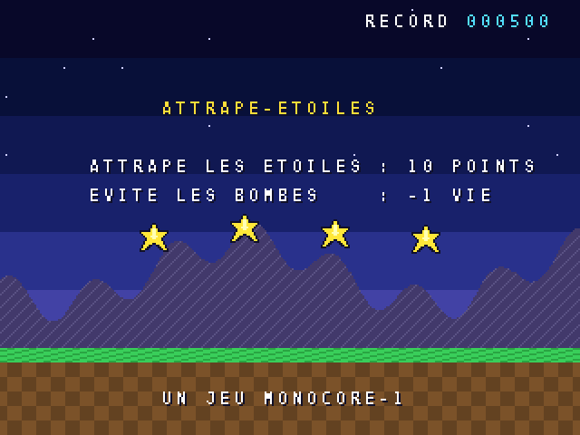
Bienvenue ! Vous avez entre les mains le manuel de la MONOCORE-1, une console de jeu qui n'a jamais existé dans le commerce : elle vit dans le circuit programmable (FPGA) de votre MiSTer. Elle a été conçue pour accueillir des adaptations de jeux d'arcade des années 1978 à 1995, mais aussi, et surtout, vos propres jeux.
Comme les ordinateurs familiaux de notre enfance, elle s'allume et attend qu'on lui dise quoi faire. Ce manuel vous apprend à le lui dire. Aucune connaissance préalable n'est nécessaire : nous partirons d'un écran vide pour arriver, au chapitre 9, à un jeu complet avec un titre, un score, des vies, de la musique et des explosions.
Chaque exemple de ce manuel est un vrai programme, fourni dans le dossier manual/examples. Les images d'écran ont été prises en le faisant tourner : ce que vous voyez est ce que vous obtiendrez.
Comme dans presque tous les langages de programmation, les noms utilisés dans le code (fonctions, variables, fichiers, réglages) sont en anglais : print pour écrire, wait_frame pour attendre l'image suivante… Chaque nom est expliqué la première fois qu'il apparaît, et l'annexe A les traduit tous. Les textes affichés à l'écran, eux, sont en français.
Bon courage, et amusez-vous bien !
Ce qu'il y a dans la boîte, et comment l'image et le son sont fabriqués.
La MONOCORE-1 est une console complète : un processeur, une mémoire, un circuit vidéo, un circuit sonore, et jusqu'à quatre manettes et un clavier. Un programme de jeu, une ROM, est un fichier .mnc que l'on charge depuis le menu du MiSTer ou que l'on glisse dans le simulateur.
| Élément | Caractéristiques |
|---|---|
| Processeur | RISC-V 32 bits à 50 MHz, environ 47 millions d'instructions par seconde |
| Mémoire | 128 Ko de mémoire de travail, 32 Ko de mémoire sauvegardée, ROM jusqu'à 32 Mo |
| Image | 320 x 240 pixels par défaut (de 224 x 192 à 384 x 288), 60 images par seconde, 4096 couleurs à l'écran parmi 32 768 |
| Plans | 4 plans de tuiles qui défilent, chacun dans sa direction |
| Sprites | 512 objets mobiles, agrandis ou réduits à volonté, retournés, jusqu'à 64 par ligne |
| Son | 8 voix d'échantillons (dont le format ADPCM des bornes d'arcade), 8 générateurs de notes et de bruit, stéréo 48 kHz |
| Commandes | 4 manettes : 4 directions, 6 boutons, START et COIN (pièce), sticks analogiques, paddles et spinners ; un clavier USB |
| Cartouche | sur la MiSTer, une ou deux mémoires Flash de 8 Mo branchées sur le port USER |
L'écran est construit 60 fois par seconde, ligne par ligne, en superposant plusieurs couches. Avec la bibliothèque easy (« facile ») que nous utiliserons dans ce manuel, il y en a quatre :
Pour placer les choses à l'écran, on utilise deux façons de compter. Le texte se range dans une grille de cases de 8 x 8 pixels : 40 colonnes et 30 lignes. Les sprites, eux, se placent au pixel près : x va de 0 (à gauche) à 319 (à droite), y de 0 (en haut) à 239 (en bas). Attention, y grandit vers le bas, comme sur toutes les consoles.
Une image de la MONOCORE-1 compte 264 lignes, dont 240 visibles. Pendant les 24 lignes invisibles, la pause verticale, rien n'est dessiné : c'est le bon moment pour préparer l'image suivante. La fonction wait_frame() (« attendre l'image ») attend précisément ce moment.
Trois outils gratuits, un simulateur, et la console est prête à recevoir vos programmes.
Un programme MONOCORE-1 s'écrit en langage C dans un simple éditeur de texte, puis il est transformé en ROM par l'outil build.py (« construire »). Il faut pour cela :
clang et ses amis) : il sait produire du code pour le processeur RISC-V de la console ;sudo apt install clang lld llvm python3 python3-pil
brew install llvm lld python pip3 install pillow export PATH="$(brew --prefix llvm)/bin:$PATH"
La dernière ligne ajoute les outils LLVM au chemin de recherche des commandes ; ajoutez-la à votre fichier ~/.zshrc pour ne pas avoir à la retaper.
Le plus simple est d'installer WSL (le Linux intégré à Windows : dans une invite de commandes, tapez wsl --install, redémarrez) puis de suivre les instructions Linux ci-dessus. On peut aussi installer LLVM (llvm.org) et Python (python.org) directement, puis pip install pillow.
Dans WSL, les disques de Windows se trouvent sous /mnt : D: devient /mnt/d, et les chemins s'écrivent avec des /. Ne recopiez pas un chemin Windows tel quel : bash prend les \ pour des caractères spéciaux et les supprime. Pour un programme rangé dans D:\Mes_Documents\Jeux\01_myhello :
cd /mnt/d/Mes_Documents/Jeux/01_myhello
Si ce programme n'est pas rangé dans le dossier de la console (voir ci-dessous), appelez build.py par son chemin complet. Avec le dossier de la console dans ~/monocore, comme ci-dessous, la commande ne crée rien d'autre que la ROM :
python3 ~/monocore/sdk/build.py
La ROM est créée dans le sous-dossier build du programme, visible directement depuis Windows. La commande wslpath 'D:\Mes_Documents' convertit un chemin Windows en chemin WSL (gardez les apostrophes), et la touche Tab complète les noms de dossiers pendant la frappe.
clang -print-targets | grep riscv32
python3 -c "import PIL; print('Pillow OK')"Le projet MONOCORE-1 est un dossier, que l'on récupère une fois pour toutes avec git (sudo apt install git s'il manque). La commande suivante crée le dossier monocore dans votre dossier personnel, que bash note ~ :
cd ~ git clone https://github.com/jadiema/monocore.git
Plus tard, git pull lancé dans ce dossier le met à jour. Dans la suite du manuel, le dossier de la console est ce dossier ~/monocore. Il contient, entre autres :
| Dossier | Contenu |
|---|---|
sdk/ | le kit de développement : easy.h, monocore.h, l'outil build.py, la police de caractères |
manual/examples/ | tous les programmes de ce manuel, prêts à construire |
dist/monocore.html | le simulateur : une page web qui fait tourner les ROM sur votre ordinateur |
mister/ | le core pour le MiSTer |
Ouvrez dist/monocore.html dans votre navigateur (Firefox, Chrome, Edge ou Safari). Cliquez sur Mettre sous tension : la ROM de test démarre. Pour essayer vos programmes, cliquez sur Charger une ROM… ou glissez un fichier .mnc sur l'écran. Le simulateur se joue au clavier ou avec une manette USB :
| Commande | Joueur 1 | Joueur 2 | Joueur 3 | Joueur 4 |
|---|---|---|---|---|
| Directions | flèches | J I K L | E R F G | pavé 4 8 5 6 |
| Boutons 1 à 3 | Z X C | N M , | Q W V | pavé 0 . Entrée |
| Boutons 4 à 6 | A S D | H U O | — | — |
| START | 1 ou Entrée | 2 | 3 | 4 ou pavé + |
| COIN (pièce) | 5 | 6 | — | — |
Les directions se lisent gauche, haut, bas, droite. Les lettres sont celles marquées sur votre clavier, qu'il soit QWERTY ou AZERTY. Jusqu'à quatre manettes USB ou Bluetooth sont reconnues, une par joueur, sticks analogiques compris. La case clavier de la console (touche F9) envoie le clavier au jeu au lieu des joueurs, et le bouton 16:9 étire l'image comme une MiSTer en plein écran sur un écran large.
Sur le côté, le moniteur montre la charge du processeur, le nombre de sprites par ligne, les voix sonores actives, et une console de debug qui affiche ce que votre programme écrit dans DEBUG_OUT, bien pratique pour chercher une erreur.
Pour jouer sur la vraie console, copiez le core MONOCORE.rbf dans le dossier _Console de la carte SD du MiSTer, et vos ROM dans games/MONOCORE. Dans le menu du core (touche F12), choisissez Charger une ROM. Une ROM nommée boot.rom dans ce dossier se lance toute seule : c'est là que l'on place l'écran d'accueil de la console, AUBE (examples/aube).
Une ROM peut aussi venir d'une cartouche : une ou deux mémoires Flash SPI W25Q64 (16 Mo au total) branchées sur le port USER du MiSTer, qui contiennent le fichier .mnc tel quel. L'outil tools/cart/cart_split.py prépare les images à graver, et mister/LISEZMOI.md donne le câblage et les réglages du menu. Pour le jeu, rien ne change : la ROM est copiée dans la SDRAM comme si elle venait de la carte SD.
Le MiSTer doit être équipé d'une barrette SDRAM : la ROM du jeu est chargée dedans.
Six lignes de C, une commande, et la console vous salue.
Tout programme vit dans son propre dossier. Celui-ci s'appelle 01_hello et contient deux fichiers. Le premier, project.txt, décrit le projet : le nom du fichier à produire (name), le titre inscrit dans la ROM (title) et les fichiers du programme (sources).
name = hello title = BONJOUR sources = main.c
Le second, main.c, est le programme lui-même :
1#include "easy.h" 2 3int main(void) { 4 init(); 5 background(0, 0, 120); 6 print(14, 12, "BONJOUR !"); 7 print(8, 16, "JE SUIS LA MONOCORE-1."); 8 for (;;) wait_frame(); 9}
Ouvrez un terminal, placez-vous dans le dossier du programme, et lancez build.py en indiquant où il se trouve :
cd ~/monocore/manual/examples/01_hello python3 ../../../sdk/build.py ROM ready: /home/.../monocore/manual/examples/01_hello/build/hello.mnc
../../../ remonte de trois dossiers, de 01_hello à monocore : ../../../sdk/build.py est donc ~/monocore/sdk/build.py, et l'on peut écrire l'un ou l'autre. Le chemin complet a l'avantage de marcher depuis n'importe quel dossier, y compris pour vos propres programmes rangés ailleurs. build.py crée le sous-dossier build dans le dossier du programme et y range la ROM.
Le fichier build/hello.mnc est votre ROM. Chargez-la dans le simulateur :
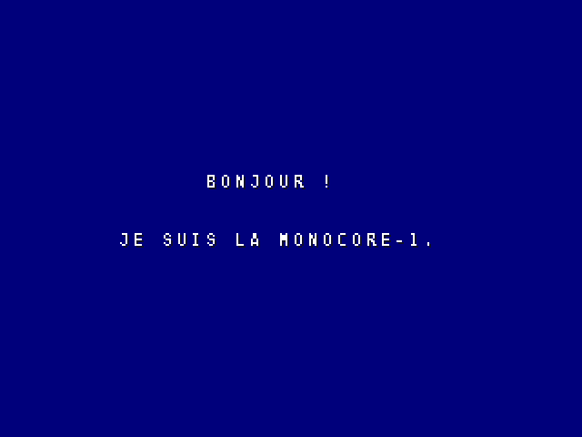
| Ligne | Ce qu'elle fait |
|---|---|
| 1 | #include "easy.h" donne accès à la bibliothèque easy : toutes les fonctions de ce manuel. |
| 3 | int main(void) : c'est ici que le programme commence. Tout ce qui est entre les accolades { } s'exécute dans l'ordre. |
| 4 | init() (« initialiser ») prépare la console : police, couleurs, écran allumé. À appeler une fois, en premier. |
| 5 | background(0, 0, 120) choisit la couleur du fond : rouge 0, vert 0, bleu 120 (sur 255). |
| 6 et 7 | print(colonne, ligne, "texte") (« imprimer ») écrit un texte dans la grille de 40 x 30 cases. |
| 8 | for (;;) répète sans fin ce qui suit. Un programme de console ne s'arrête jamais : ici, il attend image après image avec wait_frame(). |
build.py indique le fichier et la ligne. Le plus souvent, il manque un point-virgule ; en fin de ligne.Variables, conditions et boucles : de quoi donner vie à l'écran.
Le C est le langage dans lequel ont été écrits une grande partie des jeux et des systèmes depuis les années 80. Nous n'en utiliserons qu'une petite partie, présentée ici sur un exemple qui affiche les huit encres de texte, compte les secondes et fait clignoter un message.
1#include "easy.h" 2 3int main(void) { 4 init(); 5 background(20, 0, 60); // a very dark purple 6 7 print_ink(12, 3, "LES HUIT ENCRES", 1); // ink 1: yellow 8 for (int n = 0; n < 8; n++) { // n takes the values 0, 1, ... up to 7 9 print_ink(12, 7 + n * 2, "ENCRE NUMERO", n); 10 print_num(25, 7 + n * 2, n, 1, n); 11 } 12 13 int seconds = 0; 14 for (;;) { // forever 15 wait_frame(); 16 if (frame_count % 60 == 0) seconds = seconds + 1; // 60 frames = 1 second 17 print(9, 25, "SECONDES :"); 18 print_num(20, 25, seconds, 4, 2); 19 20 // blinking text: on for half a second, off for half a second 21 if ((frame_count / 30) % 2 == 0) print_ink(12, 27, "APPUIE SUR START", 6); 22 else print (12, 27, " "); 23 24 if (pressed(1, START)) background(random(256), random(256), random(256)); 25 } 26}
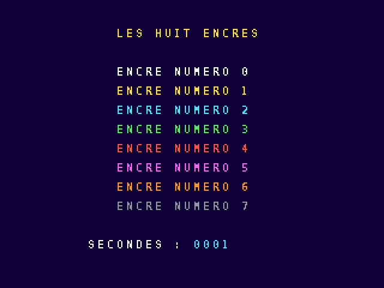
Une variable est une case de mémoire qui porte un nom et contient un nombre. int seconds = 0; crée la variable seconds (« secondes ») et y range 0. Ensuite, seconds = seconds + 1; lit la valeur, ajoute 1 et range le résultat. int veut dire « nombre entier » (de -2 milliards à +2 milliards).
La bibliothèque fournit une variable toute prête : frame_count (« nombre d'images »), qui compte les images depuis le démarrage. Comme il y en a 60 par seconde, frame_count % 60 == 0 (le reste de la division par 60 vaut zéro) est vrai une fois par seconde.
if (condition) action; n'exécute l'action que si la condition est vraie. On peut ajouter else autre_action; pour le cas contraire. Les comparaisons s'écrivent == (égal, avec deux signes !), != (différent), <, >, <=, >=. On combine avec && (et) et || (ou).
for (int n = 0; n < 8; n++) répète ce qui suit en faisant prendre à n les valeurs 0, 1, 2… jusqu'à 7. n++ veut dire « ajouter 1 à n ». La forme for (;;), sans rien, répète pour toujours : c'est la boucle principale de tout jeu, qui tourne une fois par image.
print_ink(...), background(...) ou random(256) sont des fonctions : des morceaux de programme qui ont un nom, reçoivent des valeurs entre parenthèses et parfois en rendent une. random(256) (« au hasard ») rend un nombre entre 0 et 255. Vous écrirez vos propres fonctions au chapitre 9.
int main(void) { init(); // 1. set up: colours, pictures, map, variables for (;;) { wait_frame(); // 2. read the joypad // 3. move the world, check collisions // 4. draw: sprites, score } }
Préparer, puis pour chaque image : lire la manette, faire bouger le monde, afficher.
Savoir ce que fait le joueur, image après image.
Deux fonctions suffisent pour tout savoir des manettes :
| Fonction | Rend vrai quand… | Pour… |
|---|---|---|
held(1, LEFT) | le bouton est enfoncé en ce moment (held : tenu) | les déplacements, le tir automatique |
pressed(1, B1) | le bouton vient d'être enfoncé, une seule fois par appui (pressed : appuyé) | sauter, valider un menu, compter |
Le premier nombre est le joueur, de 1 à 4. Les manettes sont lues une fois par image, par wait_frame(). Voici un programme d'essai qui affiche l'état de chaque commande des quatre manettes :
1#include "easy.h" 2 3// a label and a button for each line of the display 4static const char *labels[12] = { 5 "HAUT", "BAS", "GAUCHE", "DROITE", "BOUTON 1", "BOUTON 2", 6 "BOUTON 3", "BOUTON 4", "BOUTON 5", "BOUTON 6", "START", "PIECE"}; 7static const uint32_t buttons[12] = { 8 UP, DOWN, LEFT, RIGHT, B1, B2, B3, B4, B5, B6, START, COIN}; 9 10int main(void) { 11 init(); 12 background(0, 40, 30); 13 print_ink(10, 1, "ESSAI DES MANETTES", 1); 14 int presses[5] = {0, 0, 0, 0, 0}; // presses[1] to presses[4]: one for each player 15 16 for (int player = 1; player <= 4; player++) { 17 print_ink(9 + player * 6, 3, "J", 2); 18 print_num(10 + player * 6, 3, player, 1, 2); 19 } 20 for (;;) { 21 wait_frame(); 22 for (int i = 0; i < 12; i++) { 23 print(2, 5 + i * 2, labels[i]); 24 for (int player = 1; player <= 4; player++) { 25 if (held(player, buttons[i])) print_ink(9 + player * 6, 5 + i * 2, "##", 3); 26 else print_ink(9 + player * 6, 5 + i * 2, "..", 7); 27 } 28 } 29 print(2, 29, "APPUIS B1"); 30 for (int player = 1; player <= 4; player++) { 31 if (pressed(player, B1)) presses[player]++; // once per press, even if the button stays down 32 print_num(8 + player * 6, 29, presses[player], 3, 2); 33 } 34 } 35}
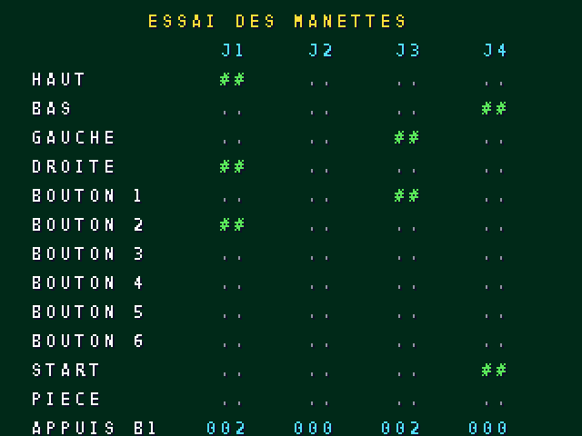
Ce programme utilise deux tableaux : labels[12] contient douze textes, buttons[12] douze boutons. labels[0] est le premier, labels[11] le dernier. La boucle for les parcourt tous avec la même variable i ; une seconde boucle, à l'intérieur, passe en revue les joueurs. Le tableau presses[5] garde un compteur par joueur : on lui a donné une case de plus pour écrire presses[1] à presses[4], la case 0 reste inutilisée.
Les manettes 3 et 4 existent depuis la version 2 de la console. Sur un core MiSTer plus ancien, held(3, …) et held(4, …) répondent toujours faux : le jeu reste jouable à un ou deux.
Des objets qui bougent : votre héros, les ennemis, les bonus.
Les dessins des sprites se rangent dans une planche (sprite sheet) : une image PNG de 16 pixels de large, où les dessins de 16 x 16 sont posés les uns sous les autres. Le premier porte le numéro 0, le suivant le numéro 1, et ainsi de suite. Dessinez-la avec n'importe quel logiciel de dessin (Aseprite, LibreSprite, GIMP, Paint…) en respectant trois règles :
| N° | Nom dans le code | Dessin |
|---|---|---|
| 0 | SHIP | vaisseau |
| 1 | STAR | étoile |
| 2 | STAR2 | étoile qui scintille |
| 3 | BOMB | bombe |
| 4 | EXPLOSION | explosion |
| 5 | HEART | cœur |
La planche des exemples, agrandie huit fois. Elle est dans 04_sprites/sheet.png.
Il suffit de la nommer dans project.txt (sprites = sheet.png) : build.py la convertit, et init() la charge avec ses couleurs. Dans le programme, sheet (le nom du fichier sans .png) est le numéro de son premier dessin : sheet + 2 est son troisième dessin. Ce nom est prêt à l'emploi, il n'y a rien à déclarer.
Un jeu peut avoir plusieurs planches : sprites = hero.png enemies.png. Leurs dessins se numérotent à la suite, et hero + 1 ou enemies + 3 les désignent sans avoir à compter. Chaque planche garde ses propres 15 couleurs.
Pour un héros plus détaillé, une planche peut faire 32 ou 64 pixels de large, avec des dessins de 32 x 32 ou de 64 x 64 posés les uns sous les autres. Chaque dessin garde la taille de sa planche : un héros de 64 x 64 et des bonus de 16 x 16 se côtoient sans rien changer au programme.
1#include "easy.h" 2 3// pictures of sheet.png: sheet is the number of its first picture 4#define SHIP (sheet + 0) 5#define STAR (sheet + 1) 6#define STAR2 (sheet + 2) 7 8int main(void) { 9 init(); // also loads sheet.png 10 background(0, 0, 40); 11 print_ink(3, 1, "MANETTE:BOUGER B1:MIROIR B2:TAILLE", 2); 12 13 int x = 152, y = 120; // ship position 14 int flipped = 0, big = 0; 15 16 for (;;) { 17 wait_frame(); 18 if (held(1, LEFT)) x = x - 2; 19 if (held(1, RIGHT)) x = x + 2; 20 if (held(1, UP)) y = y - 2; 21 if (held(1, DOWN)) y = y + 2; 22 if (pressed(1, B1)) { flipped = !flipped; flip_sprite(0, 0, flipped); } 23 if (pressed(1, B2)) { big = !big; scale_sprite(0, big ? 200 : 100); } 24 sprite(0, x, y, SHIP); 25 26 // five twinkling stars: the picture changes every 10 frames 27 for (int i = 0; i < 5; i++) { 28 int picture = ((frame_count / 10 + i) % 2) ? STAR : STAR2; 29 sprite(1 + i, 30 + i * 60, 50, picture); 30 } 31 } 32}
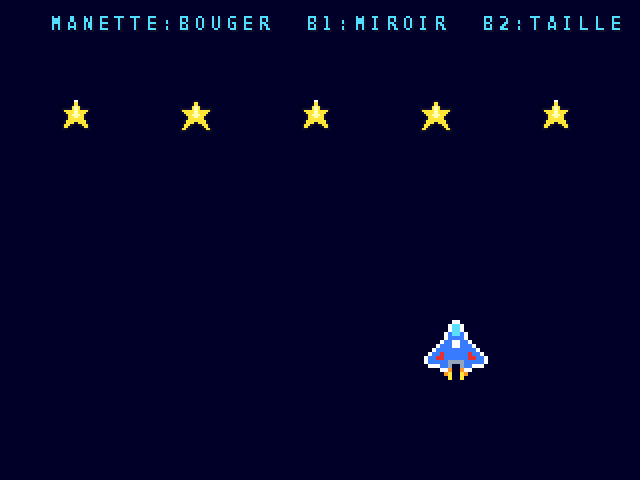
| Fonction | Effet |
|---|---|
sprite(n, x, y, picture) | affiche le sprite n (0 à 63) à la position x, y avec le dessin choisi |
hide_sprite(n) | fait disparaître le sprite n |
flip_sprite(n, h, v) | le retourne horizontalement (h = 1) et/ou verticalement (v = 1) |
scale_sprite(n, 200) | l'agrandit (200 = double, 50 = moitié) |
collide(a, b) | vrai si les sprites a et b se touchent |
Pour animer un sprite, on change de dessin régulièrement. (frame_count / 10) % 2 vaut 0 pendant 10 images, puis 1 pendant 10 images, etc. : de quoi alterner deux dessins six fois par seconde. Avec % 4, on fait tourner quatre dessins.
On peut afficher jusqu'à 64 sprites sur une même ligne de l'écran, et 1280 pixels de sprites en tout sur cette ligne : c'est 80 sprites de 16 x 16 mais seulement 20 sprites de 64 x 64 côte à côte. Au-delà, les derniers ne sont pas dessinés sur cette ligne : le moniteur du simulateur l'indique en rouge. Un jeu a au plus 8 planches et décors en tout, car chacun prend l'une des 8 palettes de couleurs.
Des bips, des bruits, des mélodies et des échantillons.
La MONOCORE-1 a 8 canaux de notes (numérotés de 0 à 7), qui jouent ensemble, et 8 voix d'échantillons pour les sons enregistrés.
| Fonction | Effet |
|---|---|
tone(channel, 440, 150) | joue un son carré de 440 hertz (le LA du diapason) au volume 150 sur 255 |
noise(channel, 120) | un souffle : explosions, vagues, caisse claire |
quiet(channel) | fait taire le canal |
play(channel, tune, 15, 100) | joue une mélodie en boucle, toute seule |
stop(channel) | arrête la mélodie |
play_sample(voice, sound, volume) | joue un son enregistré (fichier WAV) |
1#include "easy.h" 2 3// "Au clair de la lune", one note per beat 4static const char *moonlight = 5 "C C C D E - D - C E D D C - - . " 6 "C C C D E - D - C E D D C - - . "; 7 8int main(void) { 9 init(); 10 background(40, 0, 0); 11 print_ink(13, 3, "LE PETIT PIANO", 1); 12 print(4, 8, "BOUTONS 1 A 6 : DO RE MI FA SOL LA"); 13 print(4, 10, "HAUT : SI"); 14 print(4, 12, "BAS : BRUIT"); 15 print(4, 14, "START : MUSIQUE OUI / NON"); 16 17 static const int notes[6] = {262, 294, 330, 349, 392, 440}; // C D E F G A, in hertz 18 static const uint32_t keys[6] = {B1, B2, B3, B4, B5, B6}; 19 int playing = 0; 20 21 for (;;) { 22 wait_frame(); 23 int frequency = 0; 24 for (int i = 0; i < 6; i++) 25 if (held(1, keys[i])) frequency = notes[i]; 26 if (held(1, UP)) frequency = 494; // B 27 if (frequency) tone(0, frequency, 150); else quiet(0); 28 if (held(1, DOWN)) noise(1, 120); else quiet(1); 29 30 if (pressed(1, START)) { 31 playing = !playing; 32 if (playing) play(2, moonlight, 15, 100); 33 else stop(2); 34 } 35 print_ink(12, 20, playing ? "MUSIQUE : OUI" : "MUSIQUE : NON", playing ? 3 : 7); 36 } 37}
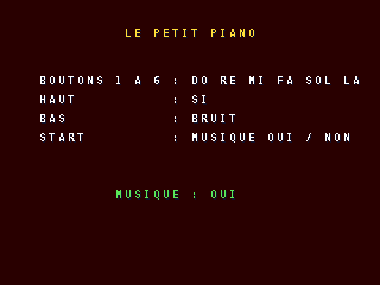
Une mélodie est un texte où chaque mot est un temps. Les notes s'écrivent avec les lettres de la notation anglaise :
| DO | RÉ | MI | FA | SOL | LA | SI |
|---|---|---|---|---|---|---|
C | D | E | F | G | A | B |
| Écriture | Signification |
|---|---|
C D E F G A B | les notes, dans l'octave 4 (celle du LA à 440 Hz) |
C5 G3 | un chiffre après la note change d'octave : C5 est le DO aigu suivant |
F# C#5 | un # (dièse) monte la note d'un demi-ton |
- | prolonge la note précédente d'un temps |
. | un temps de silence |
Le troisième nombre de play() règle le tempo : le nombre d'images par temps. 15 images, c'est 4 temps par seconde (240 à la minute) ; 30, deux fois plus lent. Pour jouer plusieurs voix en même temps (une mélodie et une basse), lancez deux mélodies sur deux canaux.
Un fichier WAV nommé dans project.txt (sounds = boom.wav) devient le nom boom. On le joue sur la voix 0, au volume 230, avec :
play_sample(0, boom, 230);
Gardez des sons courts et en 8 000 à 22 050 Hz : ils occupent moins de place dans la ROM et sonnent très « arcade ». Un son de 16 000 Hz pendant une demi-seconde occupe 8 Ko.
Un grand paysage en tuiles, qui défile derrière les sprites.
Le décor (map) est une grande image découpée en tuiles de 16 x 16 pixels. Les tuiles identiques ne sont stockées qu'une fois : un ciel uni ou un sol répétitif ne coûtent presque rien. Le décor peut mesurer jusqu'à 1024 x 1024 pixels et il boucle : en défilant au-delà du bord droit, on retrouve le bord gauche.
project.txt : maps = landscape.png ;init() l'affiche, avec ses couleurs ; s'il y a plusieurs décors (maps = level1.png level2.png), c'est le premier, et load_map(level2) passe au suivant.1#include "easy.h" 2 3int main(void) { 4 init(); // loads sheet.png and shows the map landscape.png 5 print_ink(2, 1, "GAUCHE / DROITE : VITESSE", 1); 6 7 int camera = 0; // screen position in the map, in pixels 8 int speed = 1; 9 int y = 100; 10 11 for (;;) { 12 wait_frame(); 13 if (pressed(1, RIGHT) && speed < 6) speed++; 14 if (pressed(1, LEFT) && speed > -6) speed--; 15 if (held(1, UP) && y > 20) y -= 2; 16 if (held(1, DOWN) && y < 160) y += 2; 17 18 camera = camera + speed; 19 scroll_map(camera, 0); // the map is 1024 pixels wide and wraps around by itself 20 21 sprite(0, 152, y, 0); 22 print(2, 28, "VITESSE :"); 23 print_num(12, 28, speed, 2, 2); 24 } 25}
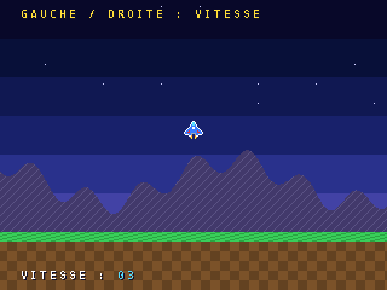
scroll_map(x, y) (« faire défiler le décor ») indique quel point du décor apparaît dans le coin en haut à gauche de l'écran. En augmentant x à chaque image, le décor glisse vers la gauche : on a l'impression d'avancer vers la droite.
Les jeux des années 80 donnaient de la profondeur en faisant défiler plusieurs plans à des vitesses différentes : le lointain lentement, le premier plan vite. La MONOCORE-1 a quatre plans, et peut même faire défiler chaque ligne de l'écran différemment (chapitre 10).
Un jeu complet : écran titre, score, record, vies, musique et explosions.
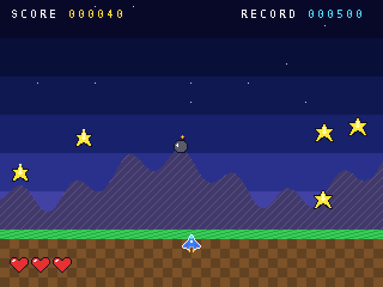
Le principe : des étoiles et des bombes tombent du ciel. Déplacez le vaisseau avec LEFT et RIGHT pour attraper les étoiles (10 points chacune) et éviter les bombes (une vie perdue). Plus le score monte, plus tout tombe vite. Le jeu tient en 150 lignes, rangées en fonctions qui ont chacune un rôle.
| Fonction | Rôle |
|---|---|
main | prépare la console, puis enchaîne pour toujours : titre, partie, fin de partie |
title_screen | écran titre : affiche le titre et les règles, joue la musique, attend START |
game | la partie : manette, objets, explosion, score, jusqu'à ce qu'il n'y ait plus de vies |
drop_item | « lâcher un objet » : le place en haut de l'écran, au hasard, étoile ou bombe |
move_items | fait tomber les objets et teste s'ils touchent le vaisseau |
show_score | écrit le score et le record, dessine les cœurs |
game_over | affiche PARTIE TERMINEE pendant trois secondes |
Chaque objet qui tombe a une position, une vitesse, et peut être une étoile ou une bombe. Plutôt que d'avoir quatre tableaux séparés, on regroupe ces informations dans une structure : item_t (« objet »). Le tableau items[6] contient six objets, et it->y désigne la position verticale de l'objet it.
# Attrape-Etoiles: the complete game of chapter 9 name = stars title = ATTRAPE-ETOILES sources = main.c sprites = sheet.png maps = landscape.png sounds = boom.wav
1// ATTRAPE-ETOILES - the complete game of the MONOCORE-1 manual 2#include "easy.h" 3 4// pictures of sheet.png 5#define SHIP (sheet + 0) 6#define STAR (sheet + 1) 7#define STAR2 (sheet + 2) 8#define BOMB (sheet + 3) 9#define EXPLOSION (sheet + 4) 10#define HEART (sheet + 5) 11 12// sprites in use 13#define SPR_PLAYER 0 14#define SPR_ITEM 1 // 1 to 6: the falling items 15#define NUM_ITEMS 6 16#define SPR_LIFE 10 // 10 to 12: the hearts 17 18typedef struct { 19 int active; 20 int x, y; // position in pixels 21 int speed; // pixels per frame 22 int bomb; // 1 = bomb, 0 = star 23} item_t; 24 25static item_t items[NUM_ITEMS]; 26static int player_x, score, best, lives, explosion; 27 28static const char *tune = 29 "E G C5 - B A G - A B C5 D5 E5 - - . " 30 "E5 D5 C5 - B A G - F A G E D - - . "; 31 32// ---------------------------------------------------------------- display 33static void show_score(void) { 34 print(1, 1, "SCORE"); 35 print_num(7, 1, score, 6, 1); 36 print(25, 1, "RECORD"); 37 print_num(32, 1, best, 6, 2); 38 for (int i = 0; i < 3; i++) { 39 if (i < lives) sprite(SPR_LIFE + i, 8 + i * 18, 214, HEART); 40 else hide_sprite(SPR_LIFE + i); 41 } 42} 43 44static void hide_all(void) { 45 for (int n = 0; n < 64; n++) hide_sprite(n); 46} 47 48// ---------------------------------------------------------------- items 49static void drop_item(item_t *it) { 50 it->active = 1; 51 it->x = 8 + random(288); 52 it->y = -16 - random(80); 53 it->speed = 1 + random(2) + score / 300; // faster and faster 54 if (it->speed > 6) it->speed = 6; 55 it->bomb = random(4) == 0; // one chance in four 56} 57 58static void move_items(void) { 59 for (int i = 0; i < NUM_ITEMS; i++) { 60 item_t *it = &items[i]; 61 it->y = it->y + it->speed; 62 if (it->y > 240) drop_item(it); // out at the bottom: drop it again from the top 63 64 int picture = it->bomb ? BOMB : (((frame_count / 8 + i) % 2) ? STAR : STAR2); 65 sprite(SPR_ITEM + i, it->x, it->y, picture); 66 67 if (collide(SPR_ITEM + i, SPR_PLAYER)) { 68 if (it->bomb) { 69 lives = lives - 1; 70 explosion = 30; // 30 frames of explosion 71 play_sample(0, boom, 230); 72 } else { 73 score = score + 10; 74 tone(1, 1200, 120); // a short "ding" 75 } 76 drop_item(it); // back to the top, out of the screen 77 hide_sprite(SPR_ITEM + i); // until it is shown there, at the next frame 78 } 79 } 80} 81 82// ---------------------------------------------------------------- screens 83static void title_screen(void) { 84 cls(); 85 hide_all(); 86 print_ink(11, 7, "ATTRAPE-ETOILES", 1); 87 print(6, 11, "ATTRAPE LES ETOILES : 10 POINTS"); 88 print(6, 13, "EVITE LES BOMBES : -1 VIE"); 89 print_ink(11, 27, "UN JEU MONOCORE-1", 0); 90 print(25, 1, "RECORD"); 91 print_num(32, 1, best, 6, 2); 92 play(2, tune, 10, 90); 93 94 for (;;) { 95 wait_frame(); 96 if ((frame_count / 30) % 2 == 0) print_ink(12, 18, "APPUIE SUR START", 6); 97 else print (12, 18, " "); 98 for (int i = 0; i < 4; i++) // four stars dancing under the rules 99 sprite(SPR_ITEM + i, 152 + (i - 2) * 50 + 25, 118 + ((frame_count / 3 + i * 3) % 8), STAR); 100 scroll_map(frame_count / 2, 0); 101 if (pressed(1, START)) break; 102 } 103 stop(2); 104} 105 106static void game(void) { 107 cls(); 108 hide_all(); 109 score = 0; lives = 3; explosion = 0; 110 player_x = 152; 111 for (int i = 0; i < NUM_ITEMS; i++) drop_item(&items[i]); 112 113 while (lives > 0) { 114 wait_frame(); 115 if (held(1, LEFT) && player_x > 4) player_x -= 3; 116 if (held(1, RIGHT) && player_x < 300) player_x += 3; 117 if (frame_count % 8 == 0) quiet(1); // ends the "ding" 118 119 if (explosion > 0) { 120 explosion--; 121 sprite(SPR_PLAYER, player_x, 196, EXPLOSION); 122 } else { 123 sprite(SPR_PLAYER, player_x, 196, SHIP); 124 move_items(); // the game pauses during the explosion 125 } 126 if (score > best) best = score; 127 show_score(); 128 scroll_map(frame_count, 0); 129 } 130} 131 132static void game_over(void) { 133 for (int i = 0; i < NUM_ITEMS; i++) hide_sprite(SPR_ITEM + i); 134 print_ink(12, 12, "PARTIE TERMINEE", 4); 135 for (int t = 0; t < 180; t++) { // 3 seconds, or START 136 wait_frame(); 137 if (pressed(1, START)) break; 138 } 139} 140 141int main(void) { 142 init(); // loads sheet.png and landscape.png 143 background(0, 0, 0); 144 best = 500; 145 for (;;) { 146 title_screen(); 147 game(); 148 game_over(); 149 } 150}
Le jeu est à vous : modifiez-le ! Quelques idées, de la plus simple à la plus ambitieuse :
held(2, LEFT) pour le joueur 2…).La bibliothèque easy n'est qu'un raccourci : voici ce que la console sait faire d'autre.
Toutes les fonctions de easy écrivent dans des registres : des adresses mémoire spéciales qui commandent les circuits de la console. monocore.h leur donne des noms. Vous pouvez les utiliser à côté de easy, à condition de respecter son rangement (plans 0 et 1, palettes 0 à 15 : les 8 encres puis les 8 palettes de couleurs, sprites 0 à 63) ou de ne pas l'utiliser du tout.
SCREEN_W = 256; // from 224 to 384 pixels wide SCREEN_H = 224; // from 192 to 288 lines
La nouvelle taille prend effet à l'image suivante. Pour un jeu vertical (comme Pac-Man ou Galaga), on choisit 224 x 288 et on demande que l'image soit tournée d'un quart de tour avec DISP_CTRL |= DISP_ROT(1). La ligne rotation = 1 de project.txt inscrit cette orientation dans la ROM, pour que l'écran soit tourné avant même que le jeu démarre. Le simulateur le fait déjà, le core MiSTer le fera dans une prochaine version.
Les plans 2 et 3, inutilisés par easy, se règlent comme le décor : LAYER_CTRL(n) (taille des tuiles, 4 ou 8 bits par pixel, taille de la carte, priorité), LAYER_CHR(n) (adresse des dessins), LAYER_SCROLLX(n) et LAYER_SCROLLY(n), et la carte TILEMAP(n). Il faut ensuite les allumer : DISP_CTRL |= DISP_LAYER(2).
Avec l'option LC_LINESCROLL, chaque ligne de l'écran ajoute son propre décalage au défilement du plan : routes de jeux de course, vagues, effets de chaleur.
LAYER_CTRL(1) |= LC_LINESCROLL; for (int y = 0; y < 240; y++) { LINESCROLL(1)[y].dx = (y > 120) ? (y - 120) * (frame_count % 64) / 32 : 0; LINESCROLL(1)[y].dy = 0; }
La console gère 512 sprites (la table SPRITES[n]), de 8 x 8 à 256 x 256 pixels (largeur et hauteur en cellules de 8 pixels), en 16 ou 256 couleurs, avec un zoom indépendant en largeur et en hauteur (zoomx, zoomy : 256 = taille normale). Le registre SPR_COUNT dit combien d'entrées la console parcourt.
Une interruption arrête le programme un instant pour exécuter irq_handler(). easy utilise celle du début de la pause verticale (VBLANK). Il en existe d'autres : LINE (au début d'une ligne choisie par LINE_CMP, pour changer un registre en cours d'image), TIMER0 et TIMER1 (à intervalle régulier, en cycles du processeur : T0_RELOAD = CPU_HZ / 240 pour 240 fois par seconde), DMA (fin de transfert).
Le DMA copie ou remplit la mémoire bien plus vite que le processeur : dma_copy(destination, source, octets) et dma_fill(destination, motif, octets). Idéal pour charger une palette, une carte de décor, ou des dessins dans la CHR RAM (128 Ko de graphismes modifiables en cours de jeu, à l'adresse CHRRAM_BASE).
Le processeur exécute environ 780 000 instructions par image. C'est énorme : un 68000 de borne d'arcade en exécutait 25 000. Le moniteur du simulateur affiche la charge : si elle dépasse 100 %, le jeu ralentit. Gardez une marge, car le simulateur estime le temps à environ 10 % près.
Pour utiliser tout cela sans écrire les registres un par un, le chapitre 11 présente le SDK mc.
Ne comptez jamais sur un nombre de cycles pour régler la vitesse d'un jeu : synchronisez-vous toujours sur les images (wait_frame()) ou sur un timer. C'est ce qui garantit que le jeu tourne pareil dans le simulateur et sur la console.
Quand easy devient trop petit : toute la console, toujours en C, sans assembleur.
La bibliothèque easy range la console d'une façon simple et fixe : un plan de texte, un décor, 64 sprites de 16 x 16, 32 x 32 ou 64 x 64. C'est parfait pour apprendre, mais un jeu plus ambitieux, ou l'adaptation d'un jeu existant, a besoin de tout le reste : les quatre plans, les 512 sprites, les interruptions, la mémoire. Le chapitre 10 a montré qu'on peut tout faire avec les registres ; le SDK mc (pour MONOCORE) donne à ces registres des fonctions pratiques, sans rien cacher.
| easy | mc | |
|---|---|---|
| Pour qui | débuter, petits jeux | jeux complexes, adaptations |
| Plans | texte (0) et décor (1) | les quatre, réglés librement |
| Sprites | 64, de 16 x 16, 32 x 32 ou 64 x 64 | 512, de 8 x 8 à 256 x 256, zoom |
| Interruptions | cachées | VBLANK, deux timers, effets raster, en C |
| Mémoire | variables seulement | malloc, free, CHR RAM |
| Bibliothèque C | — | string.h, stdlib.h, stdio.h… |
Une seule ligne dans project.txt suffit, et le programme inclut mc.h au lieu de easy.h. Toutes les fonctions commencent par mc_. On ne mélange pas les deux bibliothèques dans un même programme.
# Chapter 11: first program with the low-level mc SDK name = mcdemo title = PREMIERS PAS AVEC MC library = mc sources = main.c
Le squelette ressemble à celui d'easy : mc_init() au début, puis une boucle qui commence par mc_frame(). Cette fonction attend l'image suivante, puis envoie les sprites à la console, lit les manettes et fait avancer les mélodies.
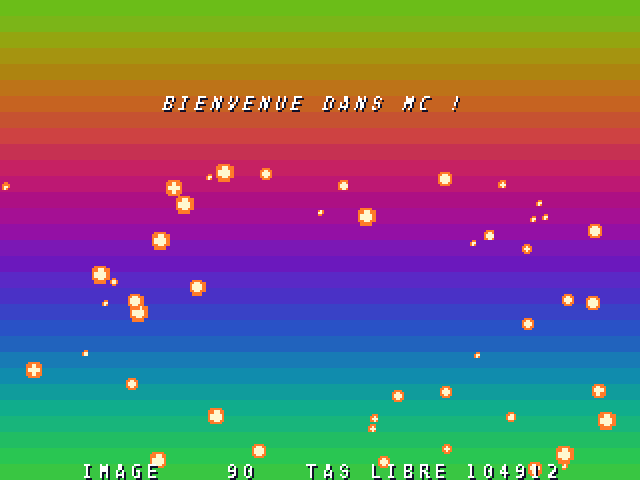
1// Chapter 11: a first program with the low-level "mc" SDK. 2// Raster rainbow, a waving title (per-line scrolling), 48 bouncing balls drawn in CHR RAM, 3// heap memory and snprintf. 4#include "mc.h" 5#include <stdio.h> 6#include <stdlib.h> 7 8typedef struct { int x, y, vx, vy; } ball_t; // positions in 1/256 pixel 9static ball_t *balls; 10#define BALLS 48 11 12static void rainbow(void) { // raster effect, called every 8 lines 13 int a = mc_raster_line * 4; // angle: one turn (1024) over the screen height 14 mc_color(4095, MC_RGB(110 + (mc_sin(a) * 90 >> 16), 110 + (mc_sin(a + 341) * 90 >> 16), 15 110 + (mc_sin(a + 683) * 90 >> 16))); 16} 17 18static void make_ball(void) { // an 8 x 8 disc, 4 bits per pixel, in CHR RAM 19 uint8_t cell[32] = {0}; 20 for (int y = 0; y < 8; y++) 21 for (int x = 0; x < 8; x++) { 22 int dx = 2 * x - 7, dy = 2 * y - 7, d = dx * dx + dy * dy; 23 int colour = d < 12 ? 2 : d < 50 ? 1 : 0; // 2: highlight, 1: body, 0: transparent 24 cell[y * 4 + x / 2] |= (uint8_t)(colour << (4 * (x & 1))); 25 } 26 mc_chr_upload(0, cell, sizeof cell); 27 mc_sprite_sheet(MC_CHR(0)); 28 mc_color(16 * 16 + 1, MC_RGB(255, 120, 40)); // palette 16: the balls 29 mc_color(16 * 16 + 2, MC_RGB(255, 240, 200)); 30} 31 32int main(void) { 33 mc_init(); 34 mc_text_layer(0, 3); 35 mc_layer_linescroll(0, true); // each line of the text layer can move 36 mc_background(4095); 37 for (int y = 0; y < 240; y += 8) mc_raster_add(y, rainbow); 38 make_ball(); 39 balls = calloc(BALLS, sizeof(ball_t)); // memory taken from the heap 40 for (int i = 0; i < BALLS; i++) 41 balls[i] = (ball_t){(int)(mc_rand() % 312) << 8, (80 + (int)(mc_rand() % 152)) << 8, 42 (int)(mc_rand() % 512) - 256, (int)(mc_rand() % 512) - 256}; 43 mc_sprites_used(BALLS); 44 mc_display(DISP_ON | DISP_LAYER(0) | DISP_SPRITES); 45 mc_text(0, 10, 6, "BIENVENUE DANS MC !", 0); 46 char line[41]; 47 for (;;) { 48 mc_frame(); 49 for (int y = 40; y < 64; y++) // the title waves: one offset per line 50 mc_linescroll(0)[y].dx = (int16_t)(mc_sin((int)mc_frames * 8 + y * 6) * 10 >> 16); 51 for (int i = 0; i < BALLS; i++) { 52 ball_t *b = &balls[i]; 53 b->x += b->vx; b->y += b->vy; 54 if (b->x < 0 || b->x > (312 << 8)) b->vx = -b->vx; 55 if (b->y < (80 << 8) || b->y > (232 << 8)) b->vy = -b->vy; 56 int zoom = 0x100 + (mc_sin((int)mc_frames * 6 + i * 21) >> 9); // 0.5x to 1.5x 57 mc_sprite(i, b->x >> 8, b->y >> 8, 0, 1, 1, 16, 4); 58 mc_sprite_zoom(i, zoom, zoom); 59 } 60 snprintf(line, sizeof line, "IMAGE %5u TAS LIBRE %6u", (unsigned)mc_frames, (unsigned)mc_heap_free()); 61 mc_text(0, 5, 29, line, 0); 62 } 63}
La console fabrique l'image ligne par ligne. mc_raster_add(ligne, fonction) demande d'appeler une fonction juste avant qu'une ligne soit dessinée : ce qu'elle change (une couleur, un défilement) s'applique à partir de cette ligne, au pixel près. Ici, 30 effets, un toutes les 8 lignes, changent la couleur de fond : c'est l'arc-en-ciel. Dans la fonction, mc_raster_line dit quelle ligne est en cours. On peut en poser 64 par image ; ils restent en place d'une image à l'autre.
L'Amiga avait un coprocesseur, le Copper, qui ne faisait que cela : changer des registres à des lignes précises. Les fameuses « barres copper » des démos en viennent. Le premier écran d'accueil de la console (examples/boot) en est un hommage.
mc_layer_linescroll(plan, true) autorise un décalage différent pour chaque ligne d'un plan ; mc_linescroll(plan)[y].dx est le décalage horizontal de la ligne y. En le faisant varier en sinus, le titre ondule comme un drapeau. Le même procédé donne les routes des jeux de course, les vagues ou les sols en perspective.
Les dessins ne viennent pas forcément d'une image PNG. La CHR RAM, 128 Ko de dessins modifiables, peut recevoir ce que le programme calcule : make_ball() trace un disque pixel par pixel, l'envoie avec mc_chr_upload, et MC_CHR(0) donne l'adresse à utiliser comme planche de sprites. Un pixel occupe 4 bits : deux pixels par octet, celui de gauche dans les 4 bits de poids faible, 32 octets par case de 8 x 8.
mc_sprite(n, x, y, case, largeur, hauteur, palette, priorité) place le sprite n (0 à 511). La largeur et la hauteur se comptent en cases de 8 pixels ; mc_sprite_zoom l'agrandit ou le réduit (256 = taille normale). Les sprites sont d'abord rangés dans une copie en mémoire, que mc_frame() envoie d'un coup par DMA : on ne voit jamais un sprite à moitié déplacé. mc_sprites_used(48) dit à la console de ne parcourir que les 48 premiers.
Avec mc, les fichiers d'en-tête habituels du C sont disponibles. calloc réserve ici la place des 48 balles dans le tas, la mémoire libre entre les variables et la pile (environ 100 Ko) ; free la rend. snprintf fabrique une ligne de texte avec des nombres, et printf écrit sur la console de debug du simulateur.
| En-tête | Ce qu'il apporte |
|---|---|
<string.h> | copier, comparer, chercher : strcpy, strcmp, strlen, memcpy… |
<stdlib.h> | malloc, calloc, realloc, free, abs, atoi, rand, qsort |
<stdio.h> | snprintf, sprintf, et printf vers la console de debug |
<ctype.h> | isdigit, toupper… |
<assert.h> | assert : arrête le programme avec un message si une condition est fausse |
Le processeur de la console ne calcule qu'en nombres entiers. Le compilateur accepte float, mais l'imite très lentement. mc fournit la virgule fixe : un fix16 est un entier qui compte en 65 536e, FIX(1.5) vaut 1,5, et mc_sin, mc_cos, mc_atan2 travaillent avec des angles de 1024 pas par tour. Dans l'exemple, les positions des balles comptent en 256e de pixel, ce qui permet des vitesses fines.
Avec mc, mc_pad(j) lit les quatre joueurs, comme held et pressed d'easy. La console lit aussi les sticks analogiques (mc_stick_x, mc_stick_y : stick 0 à gauche, 1 à droite, de −127 à +127, y positif vers le bas), les paddles (mc_paddle, de 0 à 255) et les spinners (mc_spinner_delta : le déplacement depuis l'image précédente), ainsi qu'un clavier USB. Ces entrées sont arrivées avec la version 2 du matériel : un jeu qui en a besoin vérifie mc_hw_version(), qui vaut 1 sur un core plus ancien, où ces fonctions renvoient 0.
if (mc_hw_version() >= 2) { for (int j = 1; j <= 4; j++) { ship[j - 1].x += mc_stick_x(j, 0) / 32; // left stick, -127 to +127 if (mc_pad_pressed(j) & IN_B(1)) fire(j - 1); } if (mc_key_pressed(KEY_ESC)) paused = !paused; // state of a key int e; while ((e = mc_key_event()) >= 0) // events, in order if (e & 0x200) type_key(e & 0x1FF); // 0x200: key down }
Une touche se désigne par son code PS/2, KEY_xxx dans monocore.h. Ce code repère une position sur le clavier et porte le nom de la touche d'un clavier QWERTY : sur un clavier AZERTY, la touche A est KEY_Q. mc_key et mc_key_pressed donnent l'état relevé par mc_frame(), pratique pour un jeu ; mc_key_event() rend les appuis et relâchements un par un, dans l'ordre, ce qui convient à la saisie de texte. L'exemple examples/test_inputs affiche tout ce que la console reçoit.
Le dossier examples du projet contient d'autres programmes écrits avec mc : horizon, une course en fausse 3D à la OutRun faite d'une seule texture de route décalée ligne par ligne ; aube, l'écran d'accueil, dont le lever de soleil n'est qu'une animation de palette, accompagné d'une musique orchestrale jouée par deux voix PCM ; boot, le premier écran d'accueil, avec ses barres copper.
Toutes les fonctions sont rassemblées dans l'annexe D ; le fichier sdk/SDK_MC.md donne en plus les règles du matériel à connaître pour adapter un jeu existant.
Un shoot'em up complet, dont tous les dessins sont calculés au démarrage.
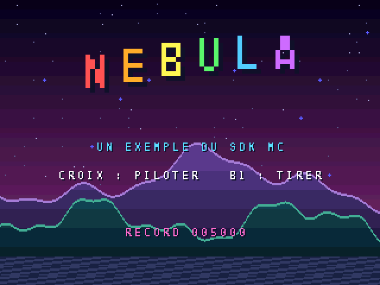
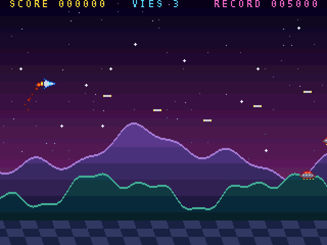
Le vaisseau traverse un paysage de montagnes et de collines ; des vagues de soucoupes arrivent en ondulant, et des orbes tirent vers le joueur. Le bouton 1 tire, la croix pilote. Le programme (505 lignes, dans examples/nebula) n'utilise aucun fichier image ni son : les sprites sont dessinés en caractères dans le code, et les décors sont calculés.
| Fonction | Rôle |
|---|---|
make_sprites | convertit les dessins en caractères (art_ship…) en cases de sprites, dans la CHR RAM |
build_layer | découpe une image calculée de 512 x 256 pixels en tuiles, en partageant les tuiles identiques |
make_backgrounds | calcule les profils des montagnes et des collines, construit les trois plans de décor |
scroll_backgrounds | fait défiler les trois plans à trois vitesses, et le sol en perspective |
sky | effet raster : une couleur de ciel toutes les 4 lignes |
play_frame | une image de jeu : manette, tirs, vagues d'ennemis, collisions |
fire_at_player | tir d'un orbe, dirigé vers le joueur avec mc_atan2 |
explosion | lance des dizaines de particules dans toutes les directions |
update_fx | fait vivre les particules : elles ralentissent, refroidissent et rétrécissent |
title_screen | écran titre |
game_over | fin de partie, avec le record gardé en mémoire sauvegardée (NVRAM) |
Chaque sprite est dessiné dans le code, une chaîne de 16 caractères par ligne : un point est transparent, une lettre de A à O désigne une couleur de 1 à 15. pack_art range ces pixels en cases de 8 x 8, dans l'ordre que la console attend pour un sprite de 2 x 2 cases : en haut à gauche, en haut à droite, en bas à gauche, en bas à droite.
static const char *const art_ship[16] = { "................", "................", "..AA............", "..ABA...........", "...ABBA.........", "...ACCBBAA......", "DDACCCCCBBBAA...", "EEACCCCFFFCCBBA.", "EEACCCCFFFCCBBA.", "DDACCCCCBBBAA...", "...ACCBBAA......", "...ABBA.........", "..ABA...........", "..AA............", "................", "................"}; ...
Les montagnes sont une somme de trois sinus : far_top[x] donne la hauteur du sommet pour chaque colonne. La fonction far_pixel(x, y) dit la couleur de chaque point d'une image de 512 x 256 pixels : rien au-dessus du sommet, une ligne claire sur la crête, puis des bandes de plus en plus sombres. build_layer découpe cette image en 2 048 tuiles de 8 x 8, mais n'en garde qu'une centaine : les tuiles identiques (le ciel vide, les bandes pleines) sont partagées. Pour les reconnaître vite, chaque tuile reçoit une empreinte (un hachage), et on ne compare en détail que les tuiles de même empreinte.
Les bandes de couleur commencent sur des multiples de 16 lignes, donc sur des bords de tuiles. Toutes les tuiles à l'intérieur d'une bande sont alors identiques : une seule suffit pour toute la bande.
Les étoiles (plan 2) défilent d'un pixel toutes les 8 images, les montagnes (plan 1) toutes les 4 images, les collines (plan 3) d'un pixel par image : c'est la parallaxe. Les 24 dernières lignes, le damier du sol, défilent de plus en plus vite vers le bas grâce au défilement ligne par ligne : on croit voir un sol qui fuit vers l'horizon. Les priorités rangent le tout : le texte (plan 0, priorité 3) devant les sprites (priorité 4), devant les collines (priorité 2), devant les montagnes (priorité 1), devant les étoiles (priorité 0).
Chaque pixel d'un plan a une priorité effective égale à deux fois celle du plan, plus 1 si la tuile porte la marque T_PRIO. Un sprite de priorité p passe devant les pixels de priorité effective inférieure ou égale à p. Le texte, de priorité effective 6, cache donc les sprites de priorité 4.
mc_atan2(dy, dx) donne la direction qui va d'un orbe au vaisseau, en 1024 pas par tour. mc_cos et mc_sin la transforment en une vitesse horizontale et verticale. Les positions comptent en 256e de pixel (FP vaut 8) : le tir avance d'environ 1,6 pixel par image, dans n'importe quelle direction.
Une explosion lance jusqu'à 48 particules. Leur réserve de 160 places est prise dans le tas avec calloc. À chaque image, une particule ralentit (sa vitesse est multipliée par 15/16), change de palette en refroidissant (blanc, jaune, orange, rouge sombre) et rétrécit grâce au zoom. Avec les tirs et les ennemis, le jeu peut afficher 233 sprites à la fois.
# NEBULA: shoot'em up example of the low-level "mc" SDK (all graphics generated at start-up) name = nebula title = NEBULA library = mc sources = main.c
1// NEBULA - a horizontal shoot'em up for MONOCORE-1, written with the low-level "mc" SDK. 2// 3// Shows what mc adds to the console's C programs: 4// - every graphic is generated at start-up in CHR RAM (no image file): sprites from ASCII art, 5// three background layers from procedural height profiles (mc_chr_upload); 6// - parallax on three layers, a perspective floor with per-line scrolling (mc_linescroll); 7// - a sky gradient made of 54 raster effects (mc_raster_add); 8// - up to 240 sprites a frame through the shadow sprite table (mc_sprite, mc_frame); 9// - zoomed sprites (title letters, explosion particles), aimed enemy shots (mc_atan2, mc_cos); 10// - heap memory (calloc), snprintf, PSG sound effects and music (mc_psg, mc_tune). 11#include "mc.h" 12#include <stdio.h> 13#include <stdlib.h> 14#include <string.h> 15 16extern const uint8_t font_chr[], font_pal[]; // SDK font, always added by build.py 17 18// ---------------------------------------------------------------- memory map of CHR RAM 19#define CHR_SPR 0x0000 // sprite cells 20#define CHR_STARS 0x1000 // layer 2: stars 21#define CHR_FAR 0x2000 // layer 1: far mountains (384 tiles at most) 22#define CHR_NEAR 0x5000 // layer 3: near hills and floor (384 tiles at most) 23#define CHR_FONT 0x8000 // copy of the SDK font, for the title letters 24#define CHR(off) MC_CHR(off) 25#define CELL_FONT (CHR_FONT / 32) 26 27// sprite cells (8 x 8 each); a 16 x 16 sprite uses 4 cells in the order tile + cy * 2 + cx 28#define CELL_SHIP 0 29#define CELL_SAUCER 4 30#define CELL_ORB 8 31#define CELL_LASER 12 32#define CELL_SHOT 13 33#define CELL_SPARK 14 34 35// palettes 36#define PAL_HUD 1 // 1-3: recoloured SDK font 37#define PAL_LETTER 4 // 4-9: title letters 38#define PAL_SPR 16 39#define PAL_FX 17 // 17-20: particles, from hot to cold 40#define PAL_STARS 24 41#define PAL_FAR 25 42#define PAL_NEAR 26 43#define SKY 4095 // background colour entry, changed line by line 44 45// sprite slots 46#define S_PLAYER 0 47#define S_LASER 1 48#define N_LASER 16 49#define S_ENEMY 17 50#define N_ENEMY 24 51#define S_SHOT 41 52#define N_SHOT 32 53#define S_FX 73 54#define N_FX 160 55#define S_USED (S_FX + N_FX) 56 57#define FP 8 // positions in 8.8 fixed point 58#define PX(v) ((v) >> FP) 59 60// ---------------------------------------------------------------- sprite art 61// '.' = transparent, 'A' to 'O' = colours 1 to 15 of PAL_SPR (or of PAL_FX for the spark) 62static const char *const art_ship[16] = { 63 "................", "................", "..AA............", "..ABA...........", 64 "...ABBA.........", "...ACCBBAA......", "DDACCCCCBBBAA...", "EEACCCCFFFCCBBA.", 65 "EEACCCCFFFCCBBA.", "DDACCCCCBBBAA...", "...ACCBBAA......", "...ABBA.........", 66 "..ABA...........", "..AA............", "................", "................"}; 67static const char *const art_saucer[16] = { 68 "................", "................", "................", "......GGGG......", 69 "....GHHHHHHG....", "...GHHIHHIHHG...", "..GJJJJJJJJJJG..", ".GJKKJKKJKKJKJG.", 70 "GJJJJJJJJJJJJJJG", ".GGJJJJJJJJJJGG.", "...GGGGGGGGGG...", "....I..I..I..I..", 71 "................", "................", "................", "................"}; 72static const char *const art_orb[16] = { 73 "................", ".....LLLLLL.....", "...LLMMMMMMLL...", "..LMMMMMMMMMML..", 74 ".LMMMNNNNNNMMML.", ".LMMNNOOOONNMML.", "LMMMNOOLLOONMMML", "LMMMNOLLLLONMMML", 75 "LMMMNOLLLLONMMML", "LMMMNOOLLOONMMML", ".LMMNNOOOONNMML.", ".LMMMNNNNNNMMML.", 76 "..LMMMMMMMMMML..", "...LLMMMMMMLL...", ".....LLLLLL.....", "................"}; 77static const char *const art_laser[8] = { 78 "........", "........", "........", "EKKKKKKE", "EKKKKKKE", "........", "........", "........"}; 79static const char *const art_shot[8] = { 80 "........", "..NNNN..", ".NNOONN.", ".NOOOON.", ".NOOOON.", ".NNOONN.", "..NNNN..", "........"}; 81static const char *const art_spark[8] = { 82 "........", "........", "...BB...", "..BAAB..", "..BAAB..", "...BB...", "........", "........"}; 83 84static int art_colour(char c) { return (c >= 'A' && c <= 'O') ? c - 'A' + 1 : 0; } 85 86// packs an ASCII picture (w x h pixels, multiples of 8) into 4 bpp cells, in sprite order 87static void pack_art(uint8_t *dst, const char *const *rows, int w, int h) { 88 int cw = w / 8, ch = h / 8; 89 for (int cy = 0; cy < ch; cy++) 90 for (int cx = 0; cx < cw; cx++) { 91 uint8_t *cell = dst + (cy * cw + cx) * 32; 92 for (int y = 0; y < 8; y++) 93 for (int x = 0; x < 8; x += 2) { 94 const char *r = rows[cy * 8 + y] + cx * 8 + x; 95 cell[y * 4 + x / 2] = (uint8_t)(art_colour(r[0]) | (art_colour(r[1]) << 4)); 96 } 97 } 98} 99 100static void make_sprites(void) { 101 static uint8_t sheet[16 * 32]; 102 memset(sheet, 0, sizeof sheet); 103 pack_art(sheet + CELL_SHIP * 32, art_ship, 16, 16); 104 pack_art(sheet + CELL_SAUCER * 32, art_saucer, 16, 16); 105 pack_art(sheet + CELL_ORB * 32, art_orb, 16, 16); 106 pack_art(sheet + CELL_LASER * 32, art_laser, 8, 8); 107 pack_art(sheet + CELL_SHOT * 32, art_shot, 8, 8); 108 pack_art(sheet + CELL_SPARK * 32, art_spark, 8, 8); 109 mc_chr_upload(CHR_SPR, sheet, sizeof sheet); 110 mc_chr_upload(CHR_FONT, font_chr, 96 * 32); 111 mc_sprite_sheet(CHR(CHR_SPR)); 112} 113 114// ---------------------------------------------------------------- procedural backgrounds 115// A layer is a 512 x 256 picture given by a function colour(x, y); it is cut into 8 x 8 tiles, 116// identical tiles are shared (hash then compare) and the tiles go to CHR RAM, the map to the layer. 117typedef int (*pixel_fn)(int x, int y); 118static uint8_t far_top[512], near_top[512]; 119 120static int far_pixel(int x, int y) { 121 int top = far_top[x]; 122 if (y < top) return 0; 123 if (y - top < 2) return 6; // lit ridge 124 int band = (y - 128) / 16; // bands aligned on tiles: shared solid tiles 125 return 1 + (band < 0 ? 0 : band > 4 ? 4 : band); 126} 127 128static int near_pixel(int x, int y) { 129 if (y >= 216) return (((x >> 4) ^ (y >> 3)) & 1) ? 7 : 8; // floor checkerboard 130 int top = near_top[x]; 131 if (y < top) return 0; 132 if (y - top < 2) return 6; 133 int band = (y - 160) / 16; 134 return 1 + (band < 0 ? 0 : band > 4 ? 4 : band); 135} 136 137static int build_layer(int layer, uint32_t chr_off, int max_tiles, pixel_fn colour, int pal, int prio) { 138 uint8_t (*tiles)[32] = calloc((size_t)max_tiles, 32); 139 uint32_t *hash = calloc((size_t)max_tiles, sizeof(uint32_t)); 140 uint32_t *map = malloc(64 * 32 * sizeof(uint32_t)); 141 if (!tiles || !hash || !map) { printf("build_layer: out of memory\n"); abort(); } 142 int count = 1; // tile 0 stays empty 143 for (int ty = 0; ty < 32; ty++) 144 for (int tx = 0; tx < 64; tx++) { 145 uint8_t t[32]; 146 uint32_t h = 2166136261u, any = 0; 147 for (int y = 0; y < 8; y++) 148 for (int x = 0; x < 8; x += 2) { 149 int a = colour(tx * 8 + x, ty * 8 + y), b = colour(tx * 8 + x + 1, ty * 8 + y); 150 uint8_t v = (uint8_t)(a | (b << 4)); 151 t[y * 4 + x / 2] = v; any |= v; h = (h ^ v) * 16777619u; 152 } 153 int n = 0; 154 if (any) { 155 for (n = 1; n < count; n++) if (hash[n] == h && !memcmp(tiles[n], t, 32)) break; 156 if (n == count) { 157 if (count == max_tiles) { printf("build_layer: too many tiles\n"); abort(); } 158 memcpy(tiles[count], t, 32); hash[count] = h; count++; 159 } 160 } 161 map[ty * 64 + tx] = MC_TILE(n, pal, 0); 162 } 163 mc_chr_upload(chr_off, tiles, (uint32_t)count * 32); 164 mc_layer(layer, CHR(chr_off), MC_TILE8 | MC_4BPP, 64, 32, prio); 165 mc_tilemap_load(layer, map, 64 * 32); 166 free(map); free(hash); free(tiles); 167 return count; 168} 169 170static void make_stars(void) { 171 static uint8_t t[4][32]; 172 memset(t, 0, sizeof t); 173 t[1][3 * 4 + 1] = 0x01; // one dim pixel 174 t[2][4 * 4 + 2] = 0x02; // one brighter pixel 175 t[3][2 * 4 + 1] = 0x30; t[3][3 * 4 + 1] = 0x33; t[3][3 * 4 + 2] = 0x03; t[3][4 * 4 + 1] = 0x30; // small cross 176 mc_chr_upload(CHR_STARS, t, sizeof t); 177 mc_layer(2, CHR(CHR_STARS), MC_TILE8 | MC_4BPP, 64, 32, 0); 178 for (int y = 0; y < 32; y++) 179 for (int x = 0; x < 64; x++) { 180 uint32_t r = mc_rand() % 100; 181 int n = r < 6 ? 1 : r < 9 ? 2 : r < 10 ? 3 : 0; 182 mc_tile(2, x, y, MC_TILE(n, PAL_STARS, 0)); 183 } 184} 185 186static void make_backgrounds(void) { 187 for (int x = 0; x < 512; x++) { // periodic profiles: angle = 1024 steps per turn 188 int a = x * 2; 189 far_top[x] = (uint8_t)(150 + ((mc_sin(a * 2) * 18 + mc_sin(a * 5) * 9 + mc_sin(a * 11) * 4) >> 16)); 190 near_top[x] = (uint8_t)(186 + ((mc_sin(a * 3) * 13 + mc_sin(a * 7) * 7 + mc_sin(a * 17) * 3) >> 16)); 191 } 192 int nf = build_layer(1, CHR_FAR, 384, far_pixel, PAL_FAR, 1); 193 int nn = build_layer(3, CHR_NEAR, 384, near_pixel, PAL_NEAR, 2); 194 make_stars(); 195 mc_layer_linescroll(3, true); 196 printf("backgrounds: %d + %d tiles, heap free %u\n", nf, nn, (unsigned)mc_heap_free()); 197} 198 199static void sky(void) { // raster effect: one sky colour every 4 lines 200 int k = mc_raster_line * 255 / 212; 201 mc_color(SKY, MC_RGB(8 + k * 112 / 255, 6 + k * 34 / 255, 30 + k * 80 / 255)); 202} 203 204static void scroll_backgrounds(uint32_t t) { 205 int far = (int)(t >> 2), near = (int)t, stars = (int)(t >> 3); 206 mc_layer_scroll(2, stars, 0); 207 mc_layer_scroll(1, far, 0); 208 mc_layer_scroll(3, near, 0); 209 volatile linescroll_t *ls = mc_linescroll(3); 210 for (int y = 216; y < 240; y++) ls[y].dx = (int16_t)(near * (y - 214) / 6); // perspective floor 211 int tw = 140 + (mc_sin((int)t * 12) * 100 >> 16); // twinkling stars 212 mc_color(PAL_STARS * 16 + 3, MC_RGB(tw, tw, 255)); 213} 214 215// ---------------------------------------------------------------- palettes and text 216static void set_rgb(int pal, int i, int r, int g, int b) { mc_color(pal * 16 + i, MC_RGB(r, g, b)); } 217static int font_white; 218 219static void make_palettes(void) { 220 static const uint8_t spr[16][3] = { 221 {0, 0, 0}, {20, 30, 90}, {60, 120, 230}, {200, 210, 225}, {255, 140, 30}, {255, 230, 80}, 222 {120, 240, 255}, {120, 20, 30}, {230, 50, 60}, {255, 220, 60}, {110, 110, 130}, {200, 200, 215}, 223 {60, 20, 90}, {150, 60, 200}, {255, 90, 180}, {255, 255, 255}}; 224 for (int i = 1; i < 16; i++) set_rgb(PAL_SPR, i, spr[i][0], spr[i][1], spr[i][2]); 225 static const uint8_t fx[4][2][3] = { 226 {{255, 255, 230}, {255, 220, 90}}, {{255, 220, 90}, {255, 130, 30}}, 227 {{255, 130, 30}, {200, 40, 20}}, {{170, 40, 20}, {80, 20, 30}}}; 228 for (int k = 0; k < 4; k++) { 229 set_rgb(PAL_FX + k, 1, fx[k][0][0], fx[k][0][1], fx[k][0][2]); 230 set_rgb(PAL_FX + k, 2, fx[k][1][0], fx[k][1][1], fx[k][1][2]); 231 } 232 set_rgb(PAL_STARS, 1, 90, 90, 140); set_rgb(PAL_STARS, 2, 160, 160, 210); set_rgb(PAL_STARS, 3, 230, 230, 255); 233 static const uint8_t far[7][3] = {{0, 0, 0}, {90, 60, 140}, {75, 50, 120}, {60, 40, 100}, {48, 32, 84}, {36, 24, 66}, {160, 120, 210}}; 234 for (int i = 1; i < 7; i++) set_rgb(PAL_FAR, i, far[i][0], far[i][1], far[i][2]); 235 static const uint8_t near[9][3] = {{0, 0, 0}, {20, 70, 80}, {16, 58, 68}, {12, 46, 56}, {9, 36, 46}, {6, 26, 36}, 236 {70, 170, 150}, {28, 36, 66}, {48, 60, 100}}; 237 for (int i = 1; i < 9; i++) set_rgb(PAL_NEAR, i, near[i][0], near[i][1], near[i][2]); 238 // recoloured copies of the SDK font palette (palette 0, set by mc_text_layer) 239 font_white = 1; 240 for (int i = 1; i < 16; i++) if (PALETTE[i] == MC_RGB(255, 255, 255)) font_white = i; 241 static const uint8_t ink[9][3] = {{255, 220, 60}, {90, 220, 255}, {255, 110, 200}, 242 {255, 80, 80}, {255, 170, 40}, {255, 240, 80}, {90, 240, 110}, {80, 200, 255}, {200, 110, 255}}; 243 for (int p = 0; p < 9; p++) { 244 for (int i = 0; i < 16; i++) PALETTE[(PAL_HUD + p) * 16 + i] = PALETTE[i]; 245 set_rgb(PAL_HUD + p, font_white, ink[p][0], ink[p][1], ink[p][2]); 246 } 247} 248 249static void text(int col, int row, const char *s, int pal) { mc_text(0, col, row, s, pal); } 250static void text_center(int row, const char *s, int pal) { text((40 - (int)strlen(s)) / 2, row, s, pal); } 251static void text_clear(void) { mc_text_clear(0); } 252 253// ---------------------------------------------------------------- sound 254static int sfx_shot, sfx_boom, sfx_boom_freq; 255 256static void sfx_update(void) { 257 if (sfx_shot > 0) { sfx_shot--; mc_psg(2, PSG_SQUARE, 700 + sfx_shot * 220, 96, sfx_shot * 9, sfx_shot * 9); } 258 if (sfx_boom > 0) { sfx_boom -= 6; if (sfx_boom < 0) sfx_boom = 0; mc_psg(3, PSG_NOISE, (uint32_t)sfx_boom_freq, 0, sfx_boom, sfx_boom); } 259} 260static void sfx_explode(int big) { sfx_boom = big ? 230 : 150; sfx_boom_freq = big ? 2500 : 6000; } 261 262static const char *tune_lead = 263 "A4 - C5 E5 - D5 C5 - B4 - G4 - A4 - - . E5 - G5 A5 - G5 E5 - D5 - C5 - B4 - - . "; 264static const char *tune_bass = 265 "A2 A3 A2 A3 A2 A3 A2 A3 F2 F3 F2 F3 G2 G3 G2 G3 C3 C4 C3 C4 C3 C4 C3 C4 G2 G3 G2 G3 E2 E3 E2 E3 "; 266 267static void music(bool on) { 268 if (on) { mc_tune(0, tune_lead, 8, 40); mc_tune(1, tune_bass, 8, 55); } 269 else { mc_tune_stop(0); mc_tune_stop(1); } 270} 271 272// ---------------------------------------------------------------- game objects 273typedef struct { bool on; int x, y, vx, vy; } shot_t; 274typedef struct { bool on; int type, x, y, base_y, phase, hp, t, flash; } enemy_t; 275typedef struct { int x, y, vx, vy, life; } particle_t; 276 277static shot_t lasers[N_LASER], shots[N_SHOT]; 278static enemy_t enemies[N_ENEMY]; 279static particle_t *fx; // N_FX particles, from the heap 280static int fx_next; 281static int px, py, lives, invuln, cooldown; 282static uint32_t score, best; 283 284static void spr16(int n, int x, int y, int cell, int pal) { 285 mc_sprite(n, x, y, cell, 2, 2, pal, 4); mc_sprite_zoom(n, 0x100, 0x100); 286} 287static void spr8(int n, int x, int y, int cell, int pal) { 288 mc_sprite(n, x, y, cell, 1, 1, pal, 4); mc_sprite_zoom(n, 0x100, 0x100); 289} 290 291static void spark(int x, int y, int speed, int life) { // x, y in pixels; speed in 1/256 px 292 particle_t *p = &fx[fx_next]; fx_next = (fx_next + 1) % N_FX; 293 int a = (int)(mc_rand() & 1023), s = speed / 2 + (int)(mc_rand() % (uint32_t)(speed + 1)); 294 p->x = x << FP; p->y = y << FP; 295 p->vx = (mc_cos(a) * s) >> 16; p->vy = (mc_sin(a) * s) >> 16; 296 p->life = life / 2 + (int)(mc_rand() % (uint32_t)(life / 2 + 1)); 297} 298static void explosion(int x, int y, int n, int speed) { for (int i = 0; i < n; i++) spark(x, y, speed, 40); } 299 300static void update_fx(void) { 301 for (int i = 0; i < N_FX; i++) { 302 particle_t *p = &fx[i]; 303 if (p->life <= 0) { mc_sprite_hide(S_FX + i); continue; } 304 p->life--; p->x += p->vx; p->y += p->vy; 305 p->vx = p->vx * 15 / 16; p->vy = p->vy * 15 / 16; // drag 306 int stage = p->life > 30 ? 0 : p->life > 20 ? 1 : p->life > 10 ? 2 : 3; 307 int z = 0x80 + p->life * 8; // particles shrink as they cool 308 mc_sprite(S_FX + i, PX(p->x) - 4, PX(p->y) - 4, CELL_SPARK, 1, 1, PAL_FX + stage, 4); 309 mc_sprite_zoom(S_FX + i, z, z); 310 } 311} 312 313static void reset_objects(void) { 314 memset(lasers, 0, sizeof lasers); memset(shots, 0, sizeof shots); memset(enemies, 0, sizeof enemies); 315 memset(fx, 0, N_FX * sizeof(particle_t)); 316 mc_sprites_hide_all(); 317} 318 319static void spawn_enemy(int type, int x, int y, int phase) { 320 for (int i = 0; i < N_ENEMY; i++) 321 if (!enemies[i].on) { 322 enemy_t *e = &enemies[i]; 323 e->on = true; e->type = type; e->x = x << FP; e->y = e->base_y = y << FP; 324 e->phase = phase; e->hp = type ? 4 : 1; e->t = (int)(mc_rand() % 60); e->flash = 0; 325 return; 326 } 327} 328 329static void fire_at_player(int ex, int ey) { // aimed shot: angle from mc_atan2 330 for (int i = 0; i < N_SHOT; i++) 331 if (!shots[i].on) { 332 int a = mc_atan2((py + 8) - ey, (px + 8) - ex); 333 shots[i] = (shot_t){true, ex << FP, ey << FP, (mc_cos(a) * 420) >> 16, (mc_sin(a) * 420) >> 16}; 334 return; 335 } 336} 337 338static bool hit(int ax, int ay, int aw, int ah, int bx, int by, int bw, int bh) { 339 return ax < bx + bw && bx < ax + aw && ay < by + bh && by < ay + ah; 340} 341 342static void hurt_player(void) { 343 if (invuln) return; 344 explosion(px + 8, py + 8, 40, 700); 345 sfx_explode(1); 346 lives--; invuln = 120; 347} 348 349// ---------------------------------------------------------------- one frame of play 350static void hud(void) { 351 char line[48]; 352 snprintf(line, sizeof line, "SCORE %06u", (unsigned)score); text(1, 0, line, PAL_HUD); 353 snprintf(line, sizeof line, "VIES %d", lives < 0 ? 0 : lives); text(16, 0, line, PAL_HUD + 1); 354 snprintf(line, sizeof line, "RECORD %06u", (unsigned)best); text(26, 0, line, PAL_HUD + 2); 355} 356 357static void play_frame(uint32_t t) { 358 uint32_t pad = mc_pad(1); 359 if (pad & IN_LEFT) px -= 2; 360 if (pad & IN_RIGHT) px += 2; 361 if (pad & IN_UP) py -= 2; 362 if (pad & IN_DOWN) py += 2; 363 px = px < 0 ? 0 : px > 300 ? 300 : px; 364 py = py < 12 ? 12 : py > 196 ? 196 : py; 365 366 // player lasers 367 if (cooldown > 0) cooldown--; 368 if ((pad & IN_B(1)) && !cooldown && lives > 0) { 369 for (int i = 0; i < N_LASER; i++) 370 if (!lasers[i].on) { lasers[i] = (shot_t){true, (px + 12) << FP, (py + 4) << FP, 7 << FP, 0}; break; } 371 cooldown = 7; sfx_shot = 6; 372 } 373 for (int i = 0; i < N_LASER; i++) { 374 shot_t *s = &lasers[i]; 375 if (s->on) { s->x += s->vx; if (PX(s->x) > 320) s->on = false; } 376 if (s->on) spr8(S_LASER + i, PX(s->x), PX(s->y), CELL_LASER, PAL_SPR); else mc_sprite_hide(S_LASER + i); 377 } 378 379 // waves: five saucers every 100 frames, an orb every 260 380 if (t % 100 == 0) { int y = 30 + (int)(mc_rand() % 130); for (int k = 0; k < 5; k++) spawn_enemy(0, 330 + k * 22, y, k * 60); } 381 if (t % 260 == 130) spawn_enemy(1, 330, 40 + (int)(mc_rand() % 130), 0); 382 383 for (int i = 0; i < N_ENEMY; i++) { 384 enemy_t *e = &enemies[i]; 385 if (!e->on) { mc_sprite_hide(S_ENEMY + i); continue; } 386 e->t++; 387 if (e->type == 0) { e->x -= 320; e->y = e->base_y + ((mc_sin(e->t * 8 + e->phase) * 26) >> 8); } 388 else { 389 e->x -= 128; e->y = e->base_y + ((mc_sin(e->t * 3) * 14) >> 8); 390 if (e->t % 70 == 0 && PX(e->x) < 310) fire_at_player(PX(e->x) + 8, PX(e->y) + 8); 391 } 392 int ex = PX(e->x), ey = PX(e->y); 393 if (ex < -20) { e->on = false; mc_sprite_hide(S_ENEMY + i); continue; } 394 for (int j = 0; j < N_LASER; j++) { 395 shot_t *s = &lasers[j]; 396 if (s->on && hit(PX(s->x), PX(s->y) + 3, 8, 2, ex + 1, ey + 3, 14, 10)) { 397 s->on = false; e->hp--; e->flash = 4; 398 if (e->hp <= 0) { 399 explosion(ex + 8, ey + 8, e->type ? 48 : 18, e->type ? 900 : 600); 400 sfx_explode(e->type); score += e->type ? 500 : 100; 401 e->on = false; break; 402 } 403 spark(ex + 2, ey + 8, 300, 12); 404 } 405 } 406 if (!e->on) { mc_sprite_hide(S_ENEMY + i); continue; } 407 if (lives > 0 && hit(ex + 2, ey + 4, 12, 8, px + 3, py + 6, 10, 4)) hurt_player(); 408 if (e->flash) e->flash--; 409 spr16(S_ENEMY + i, ex, ey, e->type ? CELL_ORB : CELL_SAUCER, e->flash ? PAL_FX : PAL_SPR); 410 } 411 412 for (int i = 0; i < N_SHOT; i++) { 413 shot_t *s = &shots[i]; 414 if (s->on) { 415 s->x += s->vx; s->y += s->vy; 416 int sx = PX(s->x), sy = PX(s->y); 417 if (sx < -8 || sx > 328 || sy < -8 || sy > 248) s->on = false; 418 else if (lives > 0 && hit(sx - 2, sy - 2, 4, 4, px + 4, py + 6, 8, 4)) { s->on = false; hurt_player(); } 419 } 420 if (s->on) spr8(S_SHOT + i, PX(s->x) - 4, PX(s->y) - 4, CELL_SHOT, PAL_SPR); else mc_sprite_hide(S_SHOT + i); 421 } 422 423 // player, blinking while invulnerable, with an engine trail 424 if (invuln) invuln--; 425 if (lives > 0 && !(invuln & 4)) spr16(S_PLAYER, px, py, CELL_SHIP, PAL_SPR); else mc_sprite_hide(S_PLAYER); 426 if (lives > 0 && (t & 1)) { 427 particle_t *p = &fx[fx_next]; fx_next = (fx_next + 1) % N_FX; 428 *p = (particle_t){(px + 1) << FP, (py + 8 + (int)(mc_rand() % 3) - 1) << FP, -(300 + (int)(mc_rand() % 200)), 0, 14}; 429 } 430 update_fx(); 431 if (score > best) best = score; 432} 433 434// ---------------------------------------------------------------- screens 435static void save_best(void) { // NVRAM: 32 KB, not yet saved to the SD card by the core 436 memcpy((void *)MC_NVRAM, "NBLA", 4); 437 for (int i = 0; i < 4; i++) MC_NVRAM[4 + i] = (uint8_t)(best >> (8 * i)); 438} 439static void load_best(void) { 440 best = 5000; 441 if (!memcmp((const void *)MC_NVRAM, "NBLA", 4)) 442 best = MC_NVRAM[4] | (MC_NVRAM[5] << 8) | ((uint32_t)MC_NVRAM[6] << 16) | ((uint32_t)MC_NVRAM[7] << 24); 443} 444 445static void title_screen(void) { 446 static const char name[] = "NEBULA"; 447 reset_objects(); text_clear(); 448 char line[48]; 449 text_center(15, "UN EXEMPLE DU SDK MC", PAL_HUD + 1); 450 text_center(18, "CROIX : PILOTER B1 : TIRER", 0); 451 snprintf(line, sizeof line, "RECORD %06u", (unsigned)best); text_center(24, line, PAL_HUD + 2); 452 for (uint32_t t = 0;; t++) { 453 mc_frame(); 454 scroll_backgrounds(mc_frames); 455 for (int i = 0; i < 6; i++) { // big letters: font cells zoomed x4, on a wave 456 int n = S_ENEMY + i; 457 mc_sprite(n, 64 + i * 32, 40 + (mc_sin((int)t * 10 + i * 90) * 10 >> 16), CELL_FONT + name[i] - 32, 1, 1, PAL_LETTER + i, 4); 458 mc_sprite_zoom(n, 0x400, 0x400); 459 } 460 text_center(21, (t / 30) % 2 ? " " : "APPUYEZ SUR START", PAL_HUD); 461 if (mc_pad_pressed(1) & IN_START) break; 462 } 463} 464 465static void game(void) { 466 reset_objects(); text_clear(); 467 px = 40; py = 100; lives = 3; invuln = 90; cooldown = 0; score = 0; 468 for (uint32_t t = 1; lives > 0 || invuln > 0; t++) { 469 mc_frame(); 470 scroll_backgrounds(mc_frames); 471 play_frame(t); 472 sfx_update(); 473 hud(); 474 } 475} 476 477static void game_over(void) { 478 text_center(11, "PARTIE TERMINEE", PAL_HUD + 3); 479 if (score >= best) { save_best(); text_center(13, "NOUVEAU RECORD !", PAL_HUD); } 480 for (int t = 0; t < 240; t++) { 481 mc_frame(); 482 scroll_backgrounds(mc_frames); 483 update_fx(); sfx_update(); 484 if (t > 60 && (mc_pad_pressed(1) & IN_START)) break; 485 } 486} 487 488int main(void) { 489 mc_init(); 490 mc_text_layer(0, 3); // layer 0: text, in front of everything 491 make_palettes(); 492 mc_color(SKY, 0); 493 mc_background(SKY); 494 text_center(14, "PREPARATION DES DECORS...", 0); 495 mc_display(DISP_ON | DISP_LAYER(0)); 496 make_sprites(); 497 make_backgrounds(); 498 fx = calloc(N_FX, sizeof(particle_t)); 499 mc_sprites_used(S_USED); 500 for (int y = 0; y <= 212; y += 4) mc_raster_add(y, sky); 501 mc_display(DISP_ON | DISP_LAYER(0) | DISP_LAYER(1) | DISP_LAYER(2) | DISP_LAYER(3) | DISP_SPRITES); 502 load_best(); 503 music(true); 504 for (;;) { title_screen(); game(); game_over(); } 505}
maps = … dans project.txt.mc_video_mode, comme une borne d'arcade.Toutes les fonctions, d'un coup d'oeil, avec la traduction de leur nom.
| Fonction | Traduction | Description |
|---|---|---|
init() | initialiser | prépare la console : à appeler une fois, au début |
wait_frame() | attendre l'image | attend l'image suivante (1/60 de seconde), lit les manettes, fait avancer les mélodies |
frame_count | nombre d'images | variable : images depuis le démarrage |
random(n) | au hasard | nombre au hasard de 0 à n - 1 |
background(r, g, b) | fond | couleur du fond (rouge, vert, bleu de 0 à 255) |
ink(n, r, g, b) | encre | couleur de l'encre de texte n (0 à 7) |
load_palette(n, pal) | charger une palette | range les couleurs d'une image en palette n (0 à 7), par exemple load_palette(3, hero_pal) |
cls() | effacer l'écran | efface tout le texte (de CLear Screen) |
print(col, row, text) | imprimer | écrit en blanc, colonne col, ligne row |
print_ink(col, row, text, ink) | imprimer en couleur | écrit avec l'encre choisie |
print_num(col, row, n, digits, ink) | imprimer un nombre | écrit un nombre sur digits chiffres, complété par des zéros |
held(player, button) | tenu | vrai si le bouton du joueur (1 à 4) est enfoncé |
pressed(player, button) | appuyé | vrai si le bouton du joueur (1 à 4) vient d'être enfoncé |
sprite(n, x, y, picture) | sprite | affiche le sprite n (0 à 63) avec le dessin picture |
hide_sprite(n) | cacher | cache le sprite n |
flip_sprite(n, h, v) | retourner | retourne le sprite n |
scale_sprite(n, percent) | mettre à l'échelle | agrandit ou réduit le sprite n |
sprite_palette(n, palette) | palette du sprite | change la palette du sprite n (-1 : celle de sa planche) |
collide(a, b) | se heurter | vrai si les sprites a et b se touchent |
load_map(map) | charger le décor | remplace le décor affiché par init() |
scroll_map(x, y) | faire défiler | fait défiler le décor |
tone(channel, freq, volume) | note | son carré sur un canal |
noise(channel, volume) | bruit | bruit sur un canal |
quiet(channel) | silence | fait taire un canal |
play(channel, tune, frames, volume) | jouer | joue une mélodie en boucle |
stop(channel) | arrêter | arrête la mélodie du canal |
play_sample(voice, sound, volume) | jouer un échantillon | joue un son enregistré |
Boutons : UP (haut), DOWN (bas), LEFT (gauche), RIGHT (droite), B1 à B6, START, COIN (pièce). Encres par défaut : 0 blanc, 1 jaune, 2 cyan, 3 vert, 4 rouge, 5 violet, 6 orange, 7 gris.
| Réglage | Contenu | Noms créés pour le programme |
|---|---|---|
name | nom du fichier produit (build/name.mnc) | |
title | titre inscrit dans la ROM | |
sources | fichiers C du programme | |
sprites | planches de sprites (PNG de 16, 32 ou 64 pixels de large) | x : numéro de son premier dessin |
maps | décors (PNG, tuiles de 16 x 16) | x : le décor, pour load_map |
sounds | sons (WAV) | x : le son, pour play_sample |
origin | origine inscrite dans la ROM (facultatif) | |
rotation | orientation de l'écran au démarrage : 0 à 3 quarts de tour (facultatif) | |
dip | DIP switches par défaut, par exemple 0x01 (facultatif) |
x est le nom du fichier sans son extension : sheet.png donne sheet. Les planches puis les décors reçoivent chacun une palette de couleurs, dans l'ordre de project.txt (0, 1, 2…). Les données brutes existent aussi sous les noms x_chr, x_pal, x_map, x_data… (utiles avec load_palette ou le SDK mc).
Pour programmer la console directement (monocore.h).
| Adresse | Taille | Contenu |
|---|---|---|
0x0000_0000 | 32 Mo max | ROM : programme, dessins, sons (lecture seule) |
0x1000_0000 | 128 Ko | mémoire de travail : variables, pile |
0x1800_0000 | 32 Ko | mémoire sauvegardée (scores, réglages) |
0x2000_0000 | 4 Ko | registres vidéo |
0x2001_0000 | 8 Ko | palette : 4096 couleurs RGB555 |
0x2002_0000 | 8 Ko | table des 512 sprites, 16 octets chacun |
0x2004_0000 | 64 Ko | cartes des 4 plans, 16 Ko chacune |
0x2008_0000 | 8 Ko | défilement par ligne des 4 plans |
0x200C_0000 | 128 Ko | CHR RAM : dessins modifiables |
0x3000_0000 | 4 Ko | registres son |
0x4000_0000 | 4 Ko | manettes, interruptions, timers, DMA |
| Registre | Rôle |
|---|---|
DISP_CTRL | bit 0 affichage, bits 1 à 4 plans 0 à 3, bit 5 sprites, bits 8-9 rotation |
SCREEN_W / SCREEN_H | taille de l'image (224-384 x 192-288) |
BG_COLOR | numéro de la couleur de fond dans la palette |
LINE_CMP | ligne de l'interruption LINE |
VCOUNT / FRAME | ligne en cours, numéro d'image (lecture) |
SPR_CHR / SPR_COUNT | adresse des dessins de sprites, nombre d'entrées parcourues |
LAYER_CTRL(n) | plan n : tuiles 16 (bit 0), 8 bpp (bit 1), largeur et hauteur de carte, défilement par ligne (bit 6), priorité (bits 8-9) |
LAYER_CHR(n) | adresse des dessins du plan n |
LAYER_SCROLLX/Y(n) | défilement du plan n |
| Registre | Rôle |
|---|---|
PCM[v].start / length / loop / step | voix d'échantillons v (0 à 7) : adresse, longueur, boucle, pas (0x10000 = 48 kHz) |
PCM[v].vol_l / vol_r / format | volumes, format (0 : 8 bits, 1 : 16 bits, 2 : ADPCM) |
PCM[v].ctrl | 1 lance, 0 arrête |
PSG[c].freq | fréquence du canal c en 1/16 de hertz |
PSG[c].wave / duty | forme (carré, triangle, dent de scie, bruit), rapport cyclique |
PSG[c].vol_l / vol_r | volumes |
MASTER_VOL | volume général |
| Registre | Rôle |
|---|---|
IN_P1 / IN_P2 / IN_SYS / DIPSW | manettes, boutons système, DIP switches |
HW_VERSION | version du matériel : 2 et plus, les entrées ci-dessous existent |
IN_P3 / IN_P4 | joueurs 3 et 4, même format que IN_P1 |
ANALOG_P(n) | manette n (0 à 3) : sticks gauche et droit, X et Y de −127 à +127 |
PADDLE_P(n) | paddle de 0 à 255 (bits 0-7), position du spinner (bits 16-31) |
KEY_STATE(k) | clavier : 8 mots de 32 bits, un bit par touche enfoncée |
KEY_EVENT | plus ancien événement clavier (bit 31 valide, bit 9 appui) ; écrire pour le retirer |
IRQ_STATUS / IRQ_ENABLE | interruptions en attente (écrire 1 pour acquitter) et autorisées |
T0_RELOAD / T0_CTRL | timer 0 : période en cycles, marche |
CYCLE_LO / CYCLE_HI | compteur de cycles du processeur (50 MHz) |
DMA_SRC / DST / LEN / CTRL | copie (CTRL = 1) ou remplissage (CTRL = 3) |
DEBUG_OUT | un caractère vers la console de debug du simulateur |
Ce que la console ne peut pas faire, et que faire quand rien ne marche.
| Limite | Valeur |
|---|---|
| Sprites par ligne | 64, et 1280 pixels de sprites |
| Couleurs | 15 par planche ou par décor (4 bits par pixel), 255 en mode 8 bits |
| Décor | 1024 x 1024 pixels (64 x 64 tuiles de 16) |
| Mémoire de travail | 128 Ko pour les variables et la pile |
| ROM | 32 Mo |
| Son | 8 voix d'échantillons + 8 canaux de notes |
| Symptôme | Cause probable et remède |
|---|---|
error: expected ';' | il manque un point-virgule à la fin de la ligne indiquée (ou de la précédente) |
use of undeclared identifier 'sheet' | l'image n'est pas nommée dans project.txt, ou porte un autre nom |
ERROR: … 8 at most | plus de 8 planches et décors : regroupez des dessins dans une même planche |
ERROR: tool not found: clang | LLVM n'est pas installé ou pas dans le chemin (chapitre 2) |
ERROR: no project.txt file | la commande n'est pas lancée dans le dossier du programme |
| écran noir | init() oublié, ou le programme n'appelle jamais wait_frame() |
| sprite invisible | numéro de dessin au-delà du dernier, sprite hors de l'écran, ou plus de 64 sprites sur la ligne |
| couleurs bizarres | plus de 15 couleurs dans l'image : réduisez la palette |
| le jeu ralentit | trop de calculs par image : regardez la charge dans le moniteur |
| rien sur le MiSTer | barrette SDRAM absente, ou essayer l'option « Lecture SDRAM : Retardée » |
Toutes les fonctions du SDK bas niveau, d'un coup d'oeil (mc.h).
| Fonction | Description |
|---|---|
mc_init() | prépare la console : à appeler une fois, au début |
mc_frame() | attend l'image suivante, envoie les sprites, lit les manettes, fait avancer les mélodies |
mc_frames | variable : images depuis le démarrage |
mc_cycles() / mc_micros() | temps écoulé, en cycles du processeur ou en microsecondes |
mc_on_vblank(f) | appelle f au début de chaque pause verticale |
mc_on_timer(t, hz, f) | appelle f hz fois par seconde (timer 0 ou 1) |
mc_raster_add(ligne, f) | effet raster : f s'applique à partir de cette ligne (64 au plus) |
mc_raster_line / mc_raster_clear() | ligne de l'effet en cours ; efface tous les effets |
mc_video_mode(w, h) | taille de l'écran, de 224 à 384 x 192 à 288 |
mc_display(flags) | allume l'affichage, les plans et les sprites (DISP_ON | DISP_LAYER(n) | DISP_SPRITES) |
mc_color(i, rgb) / MC_RGB(r, g, b) | change la couleur i (0 à 4095) |
mc_palette(p, couleurs, n) | charge n couleurs à partir de la palette p |
mc_background(i) | choisit la couleur de fond |
mc_layer(n, dessins, flags, w, h, prio) | règle le plan n : tuiles 8 ou 16, 4 ou 8 bits, taille de carte, priorité |
mc_layer_scroll(n, x, y) | fait défiler le plan n |
mc_layer_linescroll(n, on) / mc_linescroll(n) | défilement ligne par ligne et sa table |
mc_tile / mc_tilemap_fill / mc_tilemap_load | écrit une case, remplit ou charge la carte d'un plan |
MC_TILE(tuile, palette, flags) | une case de carte, avec T_HFLIP, T_VFLIP, T_PRIO |
mc_chr_upload(décalage, source, octets) | copie des dessins dans la CHR RAM |
MC_CHR(décalage) | adresse de dessins dans la CHR RAM, pour un plan ou les sprites |
mc_sprite_sheet(dessins) | choisit la planche des sprites (ROM ou CHR RAM) |
mc_sprite(n, x, y, case, w, h, pal, prio) | affiche le sprite n (0 à 511), taille en cases de 8 pixels |
mc_sprite_zoom / mc_sprite_flip / mc_sprite_8bpp | agrandit, retourne, passe en 256 couleurs |
mc_sprite_hide / mc_sprites_hide_all | cache un sprite, ou tous |
mc_sprites_used(n) | nombre d'entrées parcourues par la console |
mc_text_layer(n, prio) / mc_text / mc_text_clear | texte avec la police du SDK sur le plan n |
mc_psg(c, forme, hz, rapport, vol_g, vol_d) | note sur le canal c (PSG_SQUARE, PSG_TRIANGLE, PSG_SAW, PSG_NOISE) |
mc_psg_volume / mc_psg_freq16 | volume, fréquence en 1/16 de hertz |
mc_pcm_play(v, données, n, format, hz, boucle, vol_g, vol_d) | joue un échantillon sur la voix v |
mc_pcm_stop / mc_pcm_pos / mc_master_volume | arrête une voix, sa position, volume général |
mc_tune(c, notes, images, volume) / mc_tune_stop | mélodie en boucle, même écriture que play d'easy |
mc_pad(j) / mc_pad_pressed(j) / mc_pad_released(j) | boutons tenus, enfoncés ou relâchés à cette image (joueur 1 à 4) |
mc_sys() / mc_dip() | boutons système, DIP switches |
mc_hw_version() | version du matériel : 2 et plus pour les joueurs 3 et 4, l'analogique et le clavier |
mc_stick_x(j, s) / mc_stick_y(j, s) | stick s (0 gauche, 1 droit) du joueur j, de −127 à +127 |
mc_paddle(j) / mc_spinner(j) / mc_spinner_delta(j) | paddle (0 à 255), position du spinner, son déplacement depuis l'image précédente |
mc_key(k) / mc_key_pressed(k) / mc_key_released(k) | touche KEY_xxx tenue, enfoncée ou relâchée à cette image |
mc_key_event() | événement clavier suivant (0x200 appui, 0x100 touche étendue, + code), −1 s'il n'y en a plus |
malloc / calloc / realloc / free | mémoire du tas ; mc_heap_free() donne ce qui reste |
MC_NVRAM | 32 Ko de mémoire sauvegardée |
mc_copy / mc_fill | copie ou remplissage par DMA |
fix16, FIX(x), fix_mul, fix_div | nombres à virgule fixe (16 bits après la virgule) |
mc_sin / mc_cos / mc_atan2 / mc_isqrt | trigonométrie (1024 pas par tour) et racine carrée |
mc_rand() / mc_srand(n) | nombres au hasard |
mc_debug / printf / puts | écriture sur la console de debug du simulateur |
| Réglage | Contenu | Noms créés pour le programme |
|---|---|---|
library = mc | choisit le SDK mc (par défaut : easy) | |
data | fichiers bruts, copiés tels quels dans la ROM | x_file x_size |
maps8 | décors en 256 couleurs (8 bits par pixel, tuiles de 16 x 16) | x_chr x_pal x_map… |
cflags | options de compilation en plus pour les fichiers du programme (chemins d'inclusion, avertissements) |
MONOCORE-1 · Manuel du programmeur · édition 3, octobre 2026.
Titres en Press Start 2P (Cody Boisclair), texte en Archivo (Omnibus-Type), listings en IBM Plex Mono : polices sous licence SIL Open Font License.
Les exemples se trouvent dans manual/examples. Ce manuel se régénère avec python3 manual/tools/manual.py.